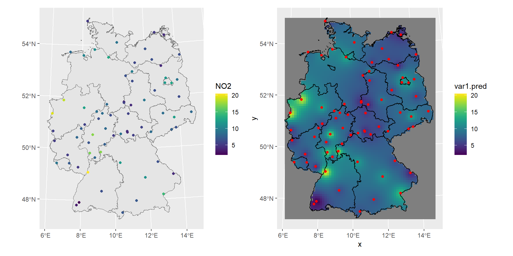
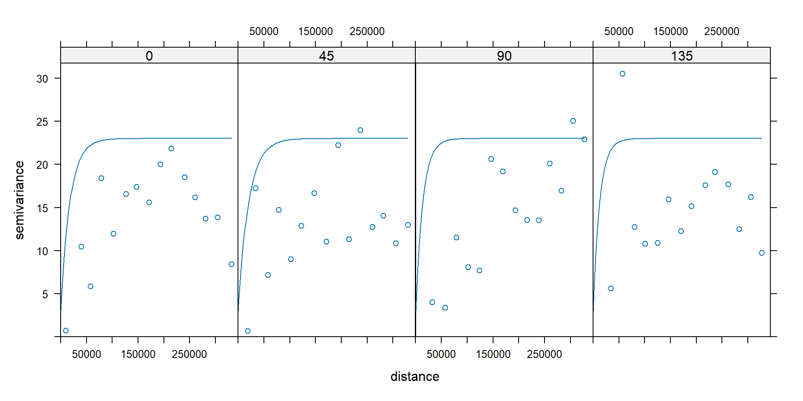
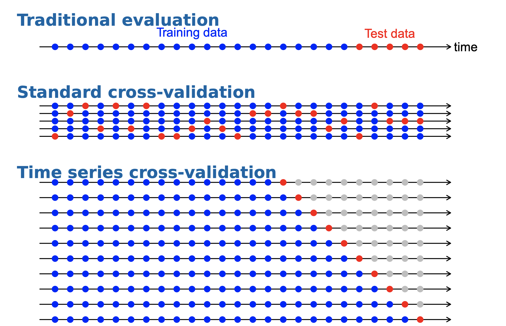
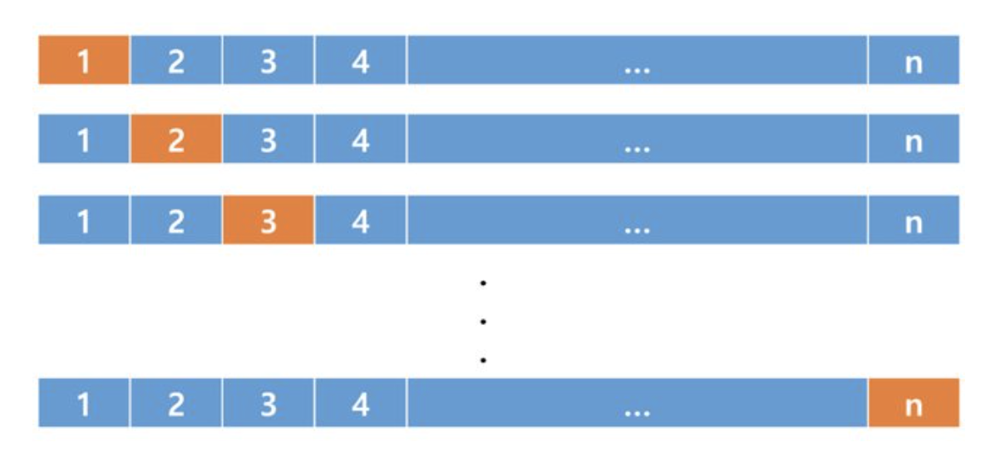

N.latitude W.longitude
Regina 50.25 -104.39
Sherbrooke 45.24 -71.54
Winnipeg 49.53 -97.09
Resolute 74.41 -94.54
Yellowknife 62.27 -114.21
Edmonton 53.33 -113.28
Dawson 64.04 -139.25
Ottawa 45.25 -75.22
Fredericton 45.58 -66.39
Churchill 58.46 -94.10
Whitehorse 60.43 -135.03
Sydney 46.09 -60.11
Scheffervll 54.47 -64.49
Montreal 45.31 -73.34Spatial Data Science
üë©ü誂Äçüíª Dr Thiyanga S. Talagala @ University of Sri Jayewardenepura
- ttalagala@sjp.ac.lk
- @thiyangt
- github.com/thiyangt
- https://thiyanga.netlify.app/
Outline
Introduction
Three types of spatial processes
Isotropy
Spatial kriging
Introduction
A spatial stochastic process is a family of random variables \[\{Z(s): s \in D\}.\]
Here,
\(D\) is the spatial domain in which observations could be made and
\(Z(s)\) is a random variable representing the quantity that you measured at location \(s\).
Daily temperature in Canada
Locations of Canadian weather stations: \(s_i\)
Example: \(s_1 = (50.25, -104.39)\)
Daily temperature in Canada
Observed daily temperature value: \(z(s_i)\)
Regina Sherbrooke Winnipeg Resolute Yellowknife Edmonton
-15.7 -10.1 -17.9 -30.7 -24.5 -12.6
Dawson Ottawa Fredericton Churchill Whitehorse Sydney
-28.0 -9.4 -7.9 -24.9 -17.6 -3.8
Scheffervll Montreal
-22.5 -8.7 Example:
\[s_1 = (50.25, -104.39)\] \[z(s_1) = -15.7\]
Visualization
N.latitude W.longitude
Regina 50.25 -104.39
Sherbrooke 45.24 -71.54
Winnipeg 49.53 -97.09
Resolute 74.41 -94.54
Yellowknife 62.27 -114.21
Edmonton 53.33 -113.28
Dawson 64.04 -139.25
Ottawa 45.25 -75.22
Fredericton 45.58 -66.39
Churchill 58.46 -94.10
Whitehorse 60.43 -135.03
Sydney 46.09 -60.11
Scheffervll 54.47 -64.49
Montreal 45.31 -73.34Visualization (cont.)
N.latitude W.longitude location
Regina 50.25 -104.39 Regina
Sherbrooke 45.24 -71.54 Sherbrooke
Winnipeg 49.53 -97.09 Winnipeg
Resolute 74.41 -94.54 Resolute
Yellowknife 62.27 -114.21 Yellowknife
Edmonton 53.33 -113.28 Edmonton
Dawson 64.04 -139.25 Dawson
Ottawa 45.25 -75.22 Ottawa
Fredericton 45.58 -66.39 Fredericton
Churchill 58.46 -94.10 Churchill
Whitehorse 60.43 -135.03 Whitehorse
Sydney 46.09 -60.11 Sydney
Scheffervll 54.47 -64.49 Scheffervll
Montreal 45.31 -73.34 MontrealVisualisation (cont.)
Simple feature collection with 14 features and 1 field
Geometry type: POINT
Dimension: XY
Bounding box: xmin: -139.25 ymin: 45.24 xmax: -60.11 ymax: 74.41
CRS: NA
First 10 features:
location geometry
Regina Regina POINT (-104.39 50.25)
Sherbrooke Sherbrooke POINT (-71.54 45.24)
Winnipeg Winnipeg POINT (-97.09 49.53)
Resolute Resolute POINT (-94.54 74.41)
Yellowknife Yellowknife POINT (-114.21 62.27)
Edmonton Edmonton POINT (-113.28 53.33)
Dawson Dawson POINT (-139.25 64.04)
Ottawa Ottawa POINT (-75.22 45.25)
Fredericton Fredericton POINT (-66.39 45.58)
Churchill Churchill POINT (-94.1 58.46)Visualisation (cont.)
Simple feature collection with 14 features and 1 field
Geometry type: POINT
Dimension: XY
Bounding box: xmin: -139.25 ymin: 45.24 xmax: -60.11 ymax: 74.41
Geodetic CRS: WGS 84
First 10 features:
location geometry
Regina Regina POINT (-104.39 50.25)
Sherbrooke Sherbrooke POINT (-71.54 45.24)
Winnipeg Winnipeg POINT (-97.09 49.53)
Resolute Resolute POINT (-94.54 74.41)
Yellowknife Yellowknife POINT (-114.21 62.27)
Edmonton Edmonton POINT (-113.28 53.33)
Dawson Dawson POINT (-139.25 64.04)
Ottawa Ottawa POINT (-75.22 45.25)
Fredericton Fredericton POINT (-66.39 45.58)
Churchill Churchill POINT (-94.1 58.46)Add temperature data
Simple feature collection with 14 features and 2 fields
Geometry type: POINT
Dimension: XY
Bounding box: xmin: -139.25 ymin: 45.24 xmax: -60.11 ymax: 74.41
Geodetic CRS: WGS 84
First 10 features:
location geometry temp
Regina Regina POINT (-104.39 50.25) -15.7
Sherbrooke Sherbrooke POINT (-71.54 45.24) -10.1
Winnipeg Winnipeg POINT (-97.09 49.53) -17.9
Resolute Resolute POINT (-94.54 74.41) -30.7
Yellowknife Yellowknife POINT (-114.21 62.27) -24.5
Edmonton Edmonton POINT (-113.28 53.33) -12.6
Dawson Dawson POINT (-139.25 64.04) -28.0
Ottawa Ottawa POINT (-75.22 45.25) -9.4
Fredericton Fredericton POINT (-66.39 45.58) -7.9
Churchill Churchill POINT (-94.1 58.46) -24.9Getting map data
Simple feature collection with 13 features and 121 fields
Geometry type: MULTIPOLYGON
Dimension: XY
Bounding box: xmin: -141.0056 ymin: 41.72947 xmax: -52.61661 ymax: 83.11652
Geodetic CRS: WGS 84
First 10 features:
featurecla scalerank adm1_code diss_me iso_3166_2
1237 Admin-1 states provinces lakes 2 CAN-633 633 CA-BC
1240 Admin-1 states provinces lakes 2 CAN-632 632 CA-AB
1241 Admin-1 states provinces lakes 2 CAN-631 631 CA-SK
1243 Admin-1 states provinces lakes 2 CAN-630 630 CA-MB
1245 Admin-1 states provinces lakes 2 CAN-682 682 CA-ON
1250 Admin-1 states provinces lakes 2 CAN-683 683 CA-QC
1254 Admin-1 states provinces lakes 2 CAN-684 684 CA-NB
1615 Admin-1 states provinces lakes 2 CAN-636 636 CA-YT
2173 Admin-1 states provinces lakes 2 CAN-634 634 CA-NU
2174 Admin-1 states provinces lakes 2 CAN-686 686 CA-NL
wikipedia iso_a2 adm0_sr
1237 http://en.wikipedia.org/wiki/British_Columbia CA 3
1240 http://en.wikipedia.org/wiki/Alberta CA 1
1241 http://en.wikipedia.org/wiki/Saskatchewan CA 1
1243 http://en.wikipedia.org/wiki/Manitoba CA 1
1245 http://en.wikipedia.org/wiki/Ontario CA 1
1250 http://en.wikipedia.org/wiki/Quebec CA 6
1254 http://en.wikipedia.org/wiki/New_Brunswick CA 5
1615 http://en.wikipedia.org/wiki/Yukon CA 5
2173 http://en.wikipedia.org/wiki/Nunavut CA 5
2174 http://en.wikipedia.org/wiki/Newfoundland_and_Labrador CA 6
name name_alt
1237 British Columbia Colombie britannique|New Caledonia
1240 Alberta <NA>
1241 Saskatchewan <NA>
1243 Manitoba <NA>
1245 Ontario Upper Canada
1250 Québec Lower Canada
1254 New Brunswick Nouveau-Brunswick|Acadia
1615 Yukon Yukon Territory|Territoire du Yukon|Yukon|Yuk¢n
2173 Nunavut <NA>
2174 Newfoundland and Labrador Newfoundland|Terre-Neuve|Terre-Neuve-et-Labrador
name_local type type_en code_local code_hasc note hasc_maybe
1237 <NA> Province Province <NA> CA.BC <NA> <NA>
1240 <NA> Province Province <NA> CA.AB <NA> <NA>
1241 <NA> Province Province <NA> CA.SK <NA> <NA>
1243 <NA> Province Province <NA> CA.MB <NA> <NA>
1245 <NA> Province Province <NA> CA.ON <NA> <NA>
1250 <NA> Province Province <NA> CA.QC <NA> <NA>
1254 <NA> Province Province <NA> CA.NB <NA> <NA>
1615 <NA> Territoire Territory <NA> CA.YT <NA> <NA>
2173 <NA> Territoire Territory <NA> CA.NU <NA> <NA>
2174 <NA> Province Province <NA> CA.NF <NA> <NA>
region region_cod provnum_ne gadm_level check_me datarank
1237 Western Canada <NA> 2 1 20 2
1240 Western Canada <NA> 12 1 20 2
1241 Western Canada <NA> 13 1 20 2
1243 Western Canada <NA> 11 1 20 2
1245 Eastern Canada <NA> 7 1 20 2
1250 Eastern Canada <NA> 4 1 20 2
1254 Eastern Canada <NA> 10 1 20 2
1615 Northern Canada Northern Canada 8 1 20 2
2173 Northern Canada Northern Canada 1 1 20 2
2174 Eastern Canada <NA> 6 1 20 2
abbrev postal area_sqkm sameascity labelrank name_len mapcolor9 mapcolor13
1237 B.C. BC 0 -99 2 16 2 2
1240 Alta. AB 0 -99 2 7 2 2
1241 Sask. SK 0 -99 2 12 2 2
1243 Man. MB 0 -99 2 8 2 2
1245 Ont. ON 0 -99 2 7 2 2
1250 Que. QC 0 -99 2 6 2 2
1254 N.B. NB 0 -99 2 13 2 2
1615 Yuk. YT 0 -99 2 5 2 2
2173 Nun. NU 0 -99 2 7 2 2
2174 N.L. NL 0 -99 2 25 2 2
fips fips_alt woe_id woe_label
1237 CA02 <NA> 2344916 British Columbia, CA, Canada
1240 CA01 <NA> 2344915 Alberta, CA, Canada
1241 CA11 <NA> 2344925 Saskatchewan, CA, Canada
1243 CA03 <NA> 2344917 Manitoba, CA, Canada
1245 CA08 <NA> 2344922 Ontario, CA, Canada
1250 CA10 <NA> 2344924 Quebec, CA, Canada
1254 CA04 <NA> 2344918 New Brunswick, CA, Canada
1615 CA12 <NA> 2344926 Yukon Territory, CA, Canada
2173 CA14 CA14 20069920 Nunavut, CA, Canada
2174 CA05 <NA> 2344919 Newfoundland and Labrador, CA, Canada
woe_name latitude longitude sov_a3 adm0_a3 adm0_label
1237 British Columbia 54.6943 -124.6620 CAN CAN 2
1240 Alberta 55.2816 -115.0000 CAN CAN 2
1241 Saskatchewan 54.4965 -105.6820 CAN CAN 2
1243 Manitoba 54.8500 -97.3828 CAN CAN 2
1245 Ontario 50.5244 -84.7943 CAN CAN 2
1250 Québec 52.2593 -73.7168 CAN CAN 2
1254 New Brunswick 46.5822 -66.4558 CAN CAN 2
1615 Yukon 63.6088 -135.7000 CAN CAN 2
2173 Nunavut 64.3853 -97.1443 CAN CAN 2
2174 Newfoundland and Labrador 48.6598 -56.2169 CAN CAN 2
admin geonunit gu_a3 gn_id gn_name gns_id
1237 Canada Canada CAN 5909050 British Columbia -561661
1240 Canada Canada CAN 5883102 Alberta -559990
1241 Canada Canada CAN 6141242 Saskatchewan -573211
1243 Canada Canada CAN 6065171 Manitoba -568643
1245 Canada Canada CAN 6093943 Ontario -570663
1250 Canada Canada CAN 6115047 Quebec -571854
1254 Canada Canada CAN 6087430 New Brunswick -570089
1615 Canada Canada CAN 6185811 Yukon -576336
2173 Canada Canada CAN 6091732 Nunavut 448560
2174 Canada Canada CAN 6354959 Newfoundland and Labrador -570103
gns_name gn_level gn_region gn_a1_code
1237 British Columbia, Province of 1 <NA> CA.02
1240 Alberta, Province d' 1 <NA> CA.01
1241 Saskatchewan, Province de 1 <NA> CA.11
1243 Manitoba, Province de 1 <NA> CA.03
1245 Ontario, Province d' 1 <NA> CA.08
1250 Quebec, Province du 1 <NA> CA.10
1254 New Brunswick, Province of 1 <NA> CA.04
1615 Yukon 1 <NA> CA.12
2173 Nunavut 1 <NA> CA.14
2174 Newfoundland and Labrador, Province of 1 <NA> CA.05
region_sub sub_code gns_level gns_lang gns_adm1 gns_region min_label
1237 British Columbia <NA> 1 eng CA02 <NA> 3.5
1240 Prairies <NA> 1 fra CA01 <NA> 3.5
1241 Prairies <NA> 1 fra CA11 <NA> 3.5
1243 Prairies <NA> 1 fra CA03 <NA> 3.5
1245 Ontario <NA> 1 fra CA08 <NA> 3.5
1250 Québec <NA> 1 fra CA10 <NA> 3.5
1254 Atlantic Canada <NA> 1 eng CA04 <NA> 3.5
1615 <NA> <NA> 1 por CA12 <NA> 3.5
2173 <NA> <NA> 1 iku CA14 <NA> 3.5
2174 Atlantic Canada <NA> 1 eng CA05 <NA> 3.5
max_label min_zoom wikidataid name_ar name_bn
1237 7.5 2 Q1974 كولومبيا البريطانية ব্রিটিশ কলাম্বিয়া
1240 7.5 2 Q1951 ألبرتا অ্যালবার্টা
1241 7.5 2 Q1989 ساسكاتشوان সাসক্যাচুয়ান
1243 7.5 2 Q1948 مانيتوبا ম্যানিটোবা
1245 7.5 2 Q1904 أونتاريو অন্টারিও
1250 7.5 2 Q176 كيبك কেবেক
1254 7.5 2 Q1965 نيو برونزويك নিউ ব্রান্সউইক
1615 7.5 2 Q2009 يوكون ইউকন
2173 7.5 2 Q2023 نونافوت নুনাভুট
2174 7.5 2 Q2003 نيوفندلاند ولابرادور নিউফাউন্ডল্যান্ড ও লাব্রাডর
name_de name_en name_es
1237 British Columbia British Columbia Columbia Británica
1240 Alberta Alberta Alberta
1241 Saskatchewan Saskatchewan Saskatchewan
1243 Manitoba Manitoba Manitoba
1245 Ontario Ontario Ontario
1250 Québec Quebec Quebec
1254 New Brunswick New Brunswick Nuevo Brunswick
1615 Yukon Yukon Yukón
2173 Nunavut Nunavut Nunavut
2174 Neufundland und Labrador Newfoundland and Labrador Terranova y Labrador
name_fr name_el name_hi
1237 Colombie-Britannique Βρετανική Κολομβία ब्रिटिश कोलम्बिया
1240 Alberta Αλμπέρτα अल्बर्टा
1241 Saskatchewan Σασκάτσουαν सैस्कैचेवेन
1243 Manitoba Μανιτόμπα मानिटोबा
1245 Ontario Οντάριο ओण्टारियो
1250 Québec Κεμπέκ क्यूबेक
1254 Nouveau-Brunswick Νιου Μπράνσγουικ न्यू ब्रंसविक
1615 Yukon Γιούκον युकॉन प्रांत
2173 Nunavut Νούναβουτ नुनावुत
2174 Terre-Neuve-et-Labrador Νέα Γη και Λαμπραντόρ न्यूफाउंडलैंड और लैब्राडोर
name_hu name_id name_it
1237 Brit Columbia British Columbia Columbia Britannica
1240 Alberta Alberta Alberta
1241 Saskatchewan Saskatchewan Saskatchewan
1243 Manitoba Manitoba Manitoba
1245 Ontario Ontario Ontario
1250 Québec Quebec Québec
1254 Új-Brunswick New Brunswick Nuovo Brunswick
1615 Yukon Yukon Yukon
2173 Nunavut Nunavut Nunavut
2174 Új-Fundland és Labrador Newfoundland dan Labrador Terranova e Labrador
name_ja name_ko
1237 ブリティッシュコロンビア州 브리티시컬럼비아
1240 アルバータ州 앨버타
1241 サスカチュワン州 서스캐처원
1243 マニトバ州 매니토바
1245 オンタリオ州 온타리오
1250 ケベック州 퀘벡
1254 ニュー・ブランズウィック州 뉴브런즈윅
1615 ユーコン準州 유콘 준
2173 ヌナブト準州 누나부트 준
2174 ニューファンドランド・ラブラドール州 뉴펀들랜드래브라도
name_nl name_pl name_pt
1237 Brits-Columbia Kolumbia Brytyjska Colúmbia Britânica
1240 Alberta Alberta Alberta
1241 Saskatchewan Saskatchewan Saskatchewan
1243 Manitoba Manitoba Manitoba
1245 Ontario Ontario Ontário
1250 Quebec Quebec Quebeque
1254 New Brunswick Nowy Brunszwik Novo Brunswick
1615 Yukon Jukon Yukon
2173 Nunavut Nunavut Nunavut
2174 Newfoundland en Labrador Nowa Fundlandia i Labrador Terra Nova e Labrador
name_ru name_sv name_tr
1237 Британская Колумбия British Columbia Britanya Kolumbiyası
1240 Альберта Alberta Alberta
1241 Саскачеван Saskatchewan Saskatchewan
1243 Манитоба Manitoba Manitoba
1245 Онтарио Ontario Ontario
1250 Квебек Québec Québec
1254 Нью-Брансуик New Brunswick New Brunswick
1615 Юкон Yukon Yukon
2173 Нунавут Nunavut Nunavut
2174 Ньюфаундленд и Лабрадор Newfoundland och Labrador Newfoundland ve Labrador
name_vi name_zh ne_id name_he
1237 British Columbia 不列颠哥伦比亚 1159307717 קולומביה הבריטית
1240 Alberta 阿尔伯塔省 1159308775 אלברטה
1241 Saskatchewan 萨斯喀彻温 1159308773 ססקצ'ואן
1243 Manitoba 曼尼托巴 1159308777 מניטובה
1245 Ontario 安大略省 1159309687 אונטריו
1250 Québec 魁北克 1159308703 קוויבק
1254 New Brunswick 新不伦瑞克 1159308785 ניו ברנזוויק
1615 Yukon 育空 1159309667 יוקון
2173 Nunavut 努纳武特 1159307715 נונאווט
2174 Newfoundland và Labrador 纽芬兰-拉布拉多 1159308713 ניופאונדלנד ולברדור
name_uk name_ur name_fa
1237 Британська Колумбія برٹش کولمبیا بریتیش کلمبیا
1240 Альберта البرٹا آلبرتا
1241 Саскачеван ساسکچیوان سسکچوان
1243 Манітоба مانیٹوبا مانیتوبا
1245 Онтаріо انٹاریو انتاریو
1250 Квебек کیوبیک استان کبک
1254 Нью-Брансвік نیو برنزویک نیوبرانزویک
1615 Юкон يوكون یوکان
2173 Нунавут نناوت نوناووت
2174 Ньюфаундленд і Лабрадор نیو فاؤنڈ لینڈ اور لیبراڈور نیوفاندلند و لابرادور
name_zht FCLASS_ISO FCLASS_US FCLASS_FR FCLASS_RU FCLASS_ES
1237 不列顛哥倫比亞省 <NA> <NA> <NA> <NA> <NA>
1240 亞伯達省 <NA> <NA> <NA> <NA> <NA>
1241 薩斯喀徹溫 <NA> <NA> <NA> <NA> <NA>
1243 曼尼托巴省 <NA> <NA> <NA> <NA> <NA>
1245 安大略省 <NA> <NA> <NA> <NA> <NA>
1250 魁北克 <NA> <NA> <NA> <NA> <NA>
1254 新不倫瑞克 <NA> <NA> <NA> <NA> <NA>
1615 育空 <NA> <NA> <NA> <NA> <NA>
2173 努納福特 <NA> <NA> <NA> <NA> <NA>
2174 紐芬蘭-拉布拉多 <NA> <NA> <NA> <NA> <NA>
FCLASS_CN FCLASS_TW FCLASS_IN FCLASS_NP FCLASS_PK FCLASS_DE FCLASS_GB
1237 <NA> <NA> <NA> <NA> <NA> <NA> <NA>
1240 <NA> <NA> <NA> <NA> <NA> <NA> <NA>
1241 <NA> <NA> <NA> <NA> <NA> <NA> <NA>
1243 <NA> <NA> <NA> <NA> <NA> <NA> <NA>
1245 <NA> <NA> <NA> <NA> <NA> <NA> <NA>
1250 <NA> <NA> <NA> <NA> <NA> <NA> <NA>
1254 <NA> <NA> <NA> <NA> <NA> <NA> <NA>
1615 <NA> <NA> <NA> <NA> <NA> <NA> <NA>
2173 <NA> <NA> <NA> <NA> <NA> <NA> <NA>
2174 <NA> <NA> <NA> <NA> <NA> <NA> <NA>
FCLASS_BR FCLASS_IL FCLASS_PS FCLASS_SA FCLASS_EG FCLASS_MA FCLASS_PT
1237 <NA> <NA> <NA> <NA> <NA> <NA> <NA>
1240 <NA> <NA> <NA> <NA> <NA> <NA> <NA>
1241 <NA> <NA> <NA> <NA> <NA> <NA> <NA>
1243 <NA> <NA> <NA> <NA> <NA> <NA> <NA>
1245 <NA> <NA> <NA> <NA> <NA> <NA> <NA>
1250 <NA> <NA> <NA> <NA> <NA> <NA> <NA>
1254 <NA> <NA> <NA> <NA> <NA> <NA> <NA>
1615 <NA> <NA> <NA> <NA> <NA> <NA> <NA>
2173 <NA> <NA> <NA> <NA> <NA> <NA> <NA>
2174 <NA> <NA> <NA> <NA> <NA> <NA> <NA>
FCLASS_AR FCLASS_JP FCLASS_KO FCLASS_VN FCLASS_TR FCLASS_ID FCLASS_PL
1237 <NA> <NA> <NA> <NA> <NA> <NA> <NA>
1240 <NA> <NA> <NA> <NA> <NA> <NA> <NA>
1241 <NA> <NA> <NA> <NA> <NA> <NA> <NA>
1243 <NA> <NA> <NA> <NA> <NA> <NA> <NA>
1245 <NA> <NA> <NA> <NA> <NA> <NA> <NA>
1250 <NA> <NA> <NA> <NA> <NA> <NA> <NA>
1254 <NA> <NA> <NA> <NA> <NA> <NA> <NA>
1615 <NA> <NA> <NA> <NA> <NA> <NA> <NA>
2173 <NA> <NA> <NA> <NA> <NA> <NA> <NA>
2174 <NA> <NA> <NA> <NA> <NA> <NA> <NA>
FCLASS_GR FCLASS_IT FCLASS_NL FCLASS_SE FCLASS_BD FCLASS_UA FCLASS_TLC
1237 <NA> <NA> <NA> <NA> <NA> <NA> <NA>
1240 <NA> <NA> <NA> <NA> <NA> <NA> <NA>
1241 <NA> <NA> <NA> <NA> <NA> <NA> <NA>
1243 <NA> <NA> <NA> <NA> <NA> <NA> <NA>
1245 <NA> <NA> <NA> <NA> <NA> <NA> <NA>
1250 <NA> <NA> <NA> <NA> <NA> <NA> <NA>
1254 <NA> <NA> <NA> <NA> <NA> <NA> <NA>
1615 <NA> <NA> <NA> <NA> <NA> <NA> <NA>
2173 <NA> <NA> <NA> <NA> <NA> <NA> <NA>
2174 <NA> <NA> <NA> <NA> <NA> <NA> <NA>
geometry
1237 MULTIPOLYGON (((-117.0382 4...
1240 MULTIPOLYGON (((-109.9993 4...
1241 MULTIPOLYGON (((-104.0476 4...
1243 MULTIPOLYGON (((-97.22609 4...
1245 MULTIPOLYGON (((-89.58175 4...
1250 MULTIPOLYGON (((-73.35134 4...
1254 MULTIPOLYGON (((-67.17601 4...
1615 MULTIPOLYGON (((-139.0602 6...
2173 MULTIPOLYGON (((-102.5728 6...
2174 MULTIPOLYGON (((-64.53141 6...Visualisation of the spatial domain \(D\)
This represents \(D\) - spatial domain (geographical region which the observations could be made)

A spatial stochastic process is a family of random variables \[\{Z(s): s \in D\}.\]
Visualisation of the spatial domain (\(D\)), and \(z(s_i)\) values

Three types of spatial processes
Geostatistical processes:
In theory the process could be observed at infinitely many locations in \(S \in D\).
Example: Air temperature in Sri Lanka
Areal process
Here \(D\) is divided into on-overlapping sub regions such as \(D = {B_1, B_2,...B_n}\) where \(B_i\) is the \(i^{th}\) sub region.
Example: Total number of dengue cases in each district in Sri Lanka
Point process
The process can be observed only at specific locations in \(S \in D\).
Example: Tree volume of sandalwood trees in Sri Lanka
Tobler’s First Law of Geography
Everything is related to everything else, but near things are more related than distant things.

Weakly Stationary
Strictly Stationary
Isotropy
direction-independent

Anisotropic
direction-independent

What is isotropic?
The correlation between any two observations depends only on the distance between those locations and not on their relative direction (directionally invariant).
Why is isotropic important in spatial data analysis?
This assumption simplifies analysis and modeling processes.
Spatial Interpolation
Spatial interpolation is the activity of estimating values of spatially continuous variables (fields) for spatial locations where they have not been observed, based on observations.
Spatial Interpolation Methods
Inverse Distance Weighting (IDW): It estimates values for unmeasured locations by considering the values and distances of nearby measured points.
Kriging: A geostatistical technique that provides optimal predictions and quantifies uncertainty by analyzing spatial autocorrelation.
Spline Interpolation: It fits a smooth curve through measured points to estimate values at unmeasured locations.
Nearest-neighbor interpolation: It assigns the value of the closest measured point to the unmeasured location.
Statial Interpolation Methods (cont.)
Natural Neighbor: Similar to nearest neighbor but considers multiple nearby points and their influence.
Radial Basis Function (RBF): It constructs a continuous function that satisfies given data values and radial symmetry properties.
Deep Learning Model for Spatial Interpolation
Image-driven spatial interpolation
Bayesian deep learning approaches
Ensemble approaches
Inverse Distance Weighting (IDW)
Nonparametric interpolation method
Based on weighted averages of the observations.
Weights are calculated based on the inverse of the distances between the known data points and the location where the estimation is being made
Relies on Tobler’s first law of geography
Inverse Distance Weighting (IDW)
Suppose \(s_0\) is the point that we need to interpolate. Then,
\[\hat{Z}(s_0) = \frac{\sum_{i=1}^{n}w(s_i)Z(s_i)}{\sum_{i=1}^nw(s_i)}\] and \(w_i\) is defined as
\[w_i = \frac{1}{||s_i - s_o||^p}\]
We can tune the value of \(p\) using a cross validation method
We can limit the amount of neighbours to take into consideration to speed up the computations.
Your turn
| x | y | z |
|---|---|---|
| 2 | 2 | 10 |
| 3 | 7 | 11 |
| 9 | 9 | 15 |
| 6 | 5 | 9 |
| 5 | 3 | 8 |

We want to find z value at x=5, y=5.
Answer
| x | y | z | dis_to_55 | inv_dis | weight |
|---|---|---|---|---|---|
| 2 | 2 | 10 | 4.242641 | 0.2357023 | 0.1040154 |
| 3 | 7 | 11 | 2.828427 | 0.3535534 | 0.1560231 |
| 9 | 9 | 15 | 5.656854 | 0.1767767 | 0.0780115 |
| 6 | 5 | 9 | 1.000000 | 1.0000000 | 0.4413000 |
| 5 | 3 | 8 | 2.000000 | 0.5000000 | 0.2206500 |
Predicted value at (5, 5)
\(z(5, 5) = 10\times 0.104 + 11 \times 0.156 + 15 \times 0.078 + \\ 9 \times 0.441 + 8 \times 0.220\)
IDW - Application
Question: Interpolate Mean \(NO_2\) concentrations in air in Germany, in 2017
Step 1: Load necessary packages
Step 2: Read data
# A tibble: 74 × 21
station_european_code station_local_code country_iso_code country_name
<chr> <chr> <chr> <chr>
1 DENI063 DENI063 DE Germany
2 DEBY109 DEBY109 DE Germany
3 DEBE056 DEBE056 DE Germany
4 DEBE062 DEBE062 DE Germany
5 DEBE032 DEBE032 DE Germany
6 DEHE046 DEHE046 DE Germany
7 DEBY122 DEBY122 DE Germany
8 DESL019 DESL019 DE Germany
9 DENW081 DENW081 DE Germany
10 DESH008 DESH008 DE Germany
# ℹ 64 more rows
# ℹ 17 more variables: station_name <chr>, station_start_date <date>,
# station_end_date <lgl>, type_of_station <chr>,
# station_ozone_classification <chr>, station_type_of_area <chr>,
# station_subcat_rural_back <chr>, street_type <chr>,
# station_longitude_deg <dbl>, station_latitude_deg <dbl>,
# station_altitude <dbl>, station_city <chr>, lau_level1_code <dbl>, … station_european_code station_local_code country_iso_code country_name
1 DENI063 DENI063 DE Germany
2 DEBY109 DEBY109 DE Germany
3 DEBE056 DEBE056 DE Germany
station_name station_start_date station_end_date type_of_station
1 Altes Land 1999-02-11 NA Background
2 Andechs/Rothenfeld 2003-04-17 NA Background
3 B Friedrichshagen 1994-02-01 NA Background
station_ozone_classification station_type_of_area station_subcat_rural_back
1 rural rural unknown
2 rural rural regional
3 rural rural near city
street_type station_longitude_deg station_latitude_deg station_altitude
1 <NA> 9.685031 53.52418 3
2 <NA> 11.220172 47.96875 700
3 <NA> 13.647050 52.44770 35
station_city lau_level1_code lau_level2_code lau_level2_name EMEP_station
1 <NA> NA 3359028 Jork no
2 <NA> NA 9188117 Andechs no
3 <NA> NA 11000000 Berlin, Stadt no
NO2
1 13.102806
2 7.135128
3 12.799011Create a Coordinate Reference System (CRS) Object
st_crs: used to create a coordinate reference system (CRS) object.
EPSG:32632is a specific CRS identifier. In this case, it refers to a CRS known as “WGS 84 / UTM zone 32N”. This CRS is commonly used for mapping and spatial analysis in Europe, particularly in the northern regions.The following line of code creates a CRS object named crs representing the coordinate reference system “WGS 84 / UTM zone 32N”.
Coordinate Reference System:
User input: EPSG:32632
wkt:
PROJCRS["WGS 84 / UTM zone 32N",
BASEGEOGCRS["WGS 84",
ENSEMBLE["World Geodetic System 1984 ensemble",
MEMBER["World Geodetic System 1984 (Transit)"],
MEMBER["World Geodetic System 1984 (G730)"],
MEMBER["World Geodetic System 1984 (G873)"],
MEMBER["World Geodetic System 1984 (G1150)"],
MEMBER["World Geodetic System 1984 (G1674)"],
MEMBER["World Geodetic System 1984 (G1762)"],
MEMBER["World Geodetic System 1984 (G2139)"],
ELLIPSOID["WGS 84",6378137,298.257223563,
LENGTHUNIT["metre",1]],
ENSEMBLEACCURACY[2.0]],
PRIMEM["Greenwich",0,
ANGLEUNIT["degree",0.0174532925199433]],
ID["EPSG",4326]],
CONVERSION["UTM zone 32N",
METHOD["Transverse Mercator",
ID["EPSG",9807]],
PARAMETER["Latitude of natural origin",0,
ANGLEUNIT["degree",0.0174532925199433],
ID["EPSG",8801]],
PARAMETER["Longitude of natural origin",9,
ANGLEUNIT["degree",0.0174532925199433],
ID["EPSG",8802]],
PARAMETER["Scale factor at natural origin",0.9996,
SCALEUNIT["unity",1],
ID["EPSG",8805]],
PARAMETER["False easting",500000,
LENGTHUNIT["metre",1],
ID["EPSG",8806]],
PARAMETER["False northing",0,
LENGTHUNIT["metre",1],
ID["EPSG",8807]]],
CS[Cartesian,2],
AXIS["(E)",east,
ORDER[1],
LENGTHUNIT["metre",1]],
AXIS["(N)",north,
ORDER[2],
LENGTHUNIT["metre",1]],
USAGE[
SCOPE["Navigation and medium accuracy spatial referencing."],
AREA["Between 6°E and 12°E, northern hemisphere between equator and 84°N, onshore and offshore. Algeria. Austria. Cameroon. Denmark. Equatorial Guinea. France. Gabon. Germany. Italy. Libya. Liechtenstein. Monaco. Netherlands. Niger. Nigeria. Norway. Sao Tome and Principe. Svalbard. Sweden. Switzerland. Tunisia. Vatican City State."],
BBOX[0,6,84,12]],
ID["EPSG",32632]]convert no2 to spatial object
no2.sf <- st_as_sf(no2, crs = "OGC:CRS84", coords =
c("station_longitude_deg", "station_latitude_deg")) |>
st_transform(crs)
no2.sfSimple feature collection with 74 features and 19 fields
Geometry type: POINT
Dimension: XY
Bounding box: xmin: 304638.2 ymin: 5263687 xmax: 900829.7 ymax: 6086661
Projected CRS: WGS 84 / UTM zone 32N
# A tibble: 74 × 20
station_european_code station_local_code country_iso_code country_name
* <chr> <chr> <chr> <chr>
1 DENI063 DENI063 DE Germany
2 DEBY109 DEBY109 DE Germany
3 DEBE056 DEBE056 DE Germany
4 DEBE062 DEBE062 DE Germany
5 DEBE032 DEBE032 DE Germany
6 DEHE046 DEHE046 DE Germany
7 DEBY122 DEBY122 DE Germany
8 DESL019 DESL019 DE Germany
9 DENW081 DENW081 DE Germany
10 DESH008 DESH008 DE Germany
# ℹ 64 more rows
# ℹ 16 more variables: station_name <chr>, station_start_date <date>,
# station_end_date <lgl>, type_of_station <chr>,
# station_ozone_classification <chr>, station_type_of_area <chr>,
# station_subcat_rural_back <chr>, street_type <chr>, station_altitude <dbl>,
# station_city <chr>, lau_level1_code <dbl>, lau_level2_code <dbl>,
# lau_level2_name <chr>, EMEP_station <chr>, NO2 <dbl>, …EPSG: 32632 vs OGC: CRS84
EPSG:32632
Commonly used for regional mapping and spatial analysis in Europe, particularly in the northern regions.
OGC:CRS84
Often used in web mapping applications and geospatial data exchange due to its simplicity and widespread support.
EPSG:32632 is a regional projected CRS optimized for mapping specific areas with minimal distortion, while OGC:CRS84 is a global geographic CRS commonly used for general-purpose mapping and data exchange.
Load country boundary
Simple feature collection with 16 features and 16 fields
Geometry type: MULTIPOLYGON
Dimension: XY
Bounding box: xmin: 280741.3 ymin: 5235822 xmax: 921330.5 ymax: 6101239
Projected CRS: WGS 84 / UTM zone 32N
# A tibble: 16 × 17
ID_0 ISO NAME_0 ID_1 NAME_1 VARNAME_1 NL_NAME_1 HASC_1 CC_1 TYPE_1
* <int> <chr> <chr> <int> <chr> <chr> <chr> <chr> <chr> <chr>
1 60 DEU Germany 753 Baden-Wurt… <NA> <NA> DE.BW <NA> Land
2 60 DEU Germany 754 Bayern Bavaria <NA> DE.BY <NA> Land
3 60 DEU Germany 755 Berlin <NA> <NA> DE.BE <NA> Land
4 60 DEU Germany 756 Brandenburg <NA> <NA> DE.BR <NA> Land
5 60 DEU Germany 757 Bremen <NA> <NA> DE.HB <NA> Land
6 60 DEU Germany 758 Hamburg <NA> <NA> DE.HH <NA> Land
7 60 DEU Germany 759 Hessen Hesse <NA> DE.HE <NA> Land
8 60 DEU Germany 760 Mecklenbur… Mecklenb… <NA> DE.MV <NA> Land
9 60 DEU Germany 761 Niedersach… Lower Sa… <NA> DE.NI <NA> Land
10 60 DEU Germany 762 Nordrhein-… North Rh… <NA> DE.NW <NA> Land
11 60 DEU Germany 763 Rheinland-… Rhinelan… <NA> DE.RP <NA> Land
12 60 DEU Germany 764 Saarland <NA> <NA> DE.SL <NA> Land
13 60 DEU Germany 765 Sachsen Saxony <NA> DE.SN <NA> Land
14 60 DEU Germany 766 Sachsen-An… Saxony-A… <NA> DE.ST <NA> Land
15 60 DEU Germany 767 Schleswig-… <NA> <NA> DE.SH <NA> Land
16 60 DEU Germany 768 Thuringen Thuringia <NA> DE.TH <NA> Land
# ℹ 7 more variables: ENGTYPE_1 <chr>, VALIDFR_1 <chr>, VALIDTO_1 <chr>,
# REMARKS_1 <chr>, Shape_Leng <dbl>, Shape_Area <dbl>,
# geom <MULTIPOLYGON [m]>Data source: https://github.com/edzer/sdsr/tree/main/data (select de_nuts1.gpkg)
Plot map
Add observed values to the map

IDW
Step 1: Create a regular grid (\(10km \times 10km\))
stars object with 2 dimensions and 1 attribute
attribute(s):
Min. 1st Qu. Median Mean 3rd Qu. Max. NA's
values 0 0 0 0 0 0 2076
dimension(s):
from to offset delta refsys x/y
x 1 65 280741 10000 WGS 84 / UTM zone 32N [x]
y 1 87 6101239 -10000 WGS 84 / UTM zone 32N [y]st_bbox(map): Calculate the bounding box of the spatial objectmap.
st_as_stars(dx = 10000): Convert the bounding box obtained fromst_bbox(map)into a raster object using the stars package. Thedxparameter sets the cell size (in the x-direction) for the resulting raster, with a value of 10000 specified here.st_crop(map):This function crops the raster grid obtained from st_as_stars(dx = 10000) to match the extent of the map object. This ensures that the resulting grid covers only the area within the spatial extent of the map object.
IDW
Step 2: Interpolation
[inverse distance weighted interpolation]stars object with 2 dimensions and 2 attributes
attribute(s):
Min. 1st Qu. Median Mean 3rd Qu. Max. NA's
var1.pred 2.168083 7.397774 8.323239 8.571584 9.422718 20.47053 2076
var1.var NA NA NA NaN NA NA 5655
dimension(s):
from to offset delta refsys x/y
x 1 65 280741 10000 WGS 84 / UTM zone 32N [x]
y 1 87 6101239 -10000 WGS 84 / UTM zone 32N [y]IDW
Step 3: Plot values

Comparison
library(patchwork)
p1 <- ggplot() + geom_sf(data = map) + geom_sf(data = no2.sf, mapping = aes(col = NO2)) + scale_color_viridis()
p2 <- ggplot() + geom_stars(data = interpolated.values,
aes(fill = var1.pred, x = x, y = y)) + geom_sf(data = st_cast(map, "MULTILINESTRING")) + geom_sf(data = no2.sf, col="red") + scale_fill_viridis()
p1|p2
Variogram Modelling and Krigging
Geostatistical processes are generally modelled using additive decomposition:
\[Z(s) = \mu(s) + \epsilon(s)\]
Where,
\(\mu(s)\) - large-scale variation/ spatial-trend/ spatially varying mean that captures the long range (nonstationary) spatial variation
\(\epsilon(s)\) - small-scale variation/ innovations/ spatial geostatistical error
- To fully capture the characteristics of the geostatistical process, we need to model both \(\mu(s)\) and \(\epsilon(s)\).
Overall modeeling approach
\[Z(s) = \mu(s) + \epsilon(s)\]
First we model \(\mu(s)\) using OLS or some other trend model via covariates and the residuals are used to model small-scale variation.
Modelling Large Scale Variation
Regression
Machine-learning models
Modelling Small Scale Variation
Let’s learn some theories we need to model small scale variations.
Investigate Spatial Autocorrelation Using Empirical Variogram/ Variogram cloud
\[\gamma(s, t) = \frac{1}{2}Var\{Z(s_i) - Z(s_j)\}\] An estimator for this is
\[\gamma(s, t) = \frac{1}{2}\{Z(s_i) - Z(s_j)\}^2\]
Proof: In-class
Variogram Cloud/ Empirical Variogram
dist gamma dir.hor dir.ver id left right
1 291778.272 4.614575e-02 0 0 var1 3 1
2 260594.879 8.088801e-01 0 0 var1 4 1
3 33040.195 4.686251e-01 0 0 var1 4 3
4 264858.840 6.302227e-01 0 0 var1 5 1
5 28838.008 3.352990e-01 0 0 var1 5 3
6 20620.764 1.113277e-02 0 0 var1 5 4
7 238444.197 8.682758e+00 0 0 var1 6 1
8 329024.871 4.191332e+00 0 0 var1 6 4
9 317286.345 4.634489e+00 0 0 var1 6 5
10 79080.277 6.548094e-03 0 0 var1 7 2
11 280433.822 4.239450e-02 0 0 var1 8 6
12 265057.003 1.566442e+01 0 0 var1 9 1
13 149968.341 4.767188e+01 0 0 var1 9 6
14 272931.248 4.487102e+01 0 0 var1 9 8
15 73123.661 7.773505e+00 0 0 var1 10 1
16 291856.123 6.621795e+00 0 0 var1 10 3
17 258897.927 3.567274e+00 0 0 var1 10 4
18 268547.646 3.976973e+00 0 0 var1 10 5
19 309101.508 2.513857e-02 0 0 var1 10 6
20 335637.582 4.550759e+01 0 0 var1 10 9
21 302277.749 9.980953e-01 0 0 var1 11 2
22 227742.767 9.035571e+00 0 0 var1 11 3
23 239718.000 5.388715e+00 0 0 var1 11 4
24 219190.447 5.889710e+00 0 0 var1 11 5
25 247800.772 7.512323e-02 0 0 var1 11 6
26 202066.014 4.525315e+01 0 0 var1 12 1
27 219675.929 4.240914e+01 0 0 var1 12 3
28 206223.935 3.396172e+01 0 0 var1 12 4
29 193640.088 3.520263e+01 0 0 var1 12 5
30 123962.871 1.429138e+01 0 0 var1 12 6
31 258065.531 1.141666e+02 0 0 var1 12 9
32 256540.245 1.551529e+01 0 0 var1 12 10
33 173001.612 1.229419e+01 0 0 var1 12 11
34 306687.068 1.105700e+01 0 0 var1 13 1
35 336696.701 8.002720e-01 0 0 var1 13 2
36 337867.345 5.884644e+00 0 0 var1 13 4
37 322273.312 6.407685e+00 0 0 var1 13 5
38 82333.968 1.433032e-01 0 0 var1 13 6
39 256694.483 3.415857e-01 0 0 var1 13 8
40 217225.223 5.304262e+01 0 0 var1 13 9
41 195245.096 1.091355e-02 0 0 var1 13 11
42 140033.354 1.157251e+01 0 0 var1 13 12
43 177037.634 1.189548e+01 0 0 var1 14 2
44 241876.889 4.734317e+00 0 0 var1 14 6
45 214265.356 1.246021e+01 0 0 var1 14 7
46 272981.806 3.880700e+00 0 0 var1 14 8
47 187543.709 6.002180e+00 0 0 var1 14 11
48 262671.278 3.547682e+01 0 0 var1 14 12
49 159659.285 6.524973e+00 0 0 var1 14 13
50 334903.705 9.972493e+00 0 0 var1 15 1
51 134732.569 8.661895e+00 0 0 var1 15 3
52 151531.011 5.101038e+00 0 0 var1 15 4
53 131037.224 5.588778e+00 0 0 var1 15 5
54 284515.210 4.463643e-02 0 0 var1 15 6
55 95613.911 3.945451e-03 0 0 var1 15 11
56 174762.017 1.273862e+01 0 0 var1 15 12
57 255937.721 2.798286e-02 0 0 var1 15 13
58 281883.158 5.698351e+00 0 0 var1 15 14
59 239736.621 7.025133e+00 0 0 var1 16 1
60 138101.308 5.932543e+00 0 0 var1 16 3
61 132129.447 3.066418e+00 0 0 var1 16 4
62 115523.342 3.447079e+00 0 0 var1 16 5
63 210028.260 8.770794e-02 0 0 var1 16 6
64 274410.505 1.893480e-02 0 0 var1 16 10
65 138577.783 3.251753e-01 0 0 var1 16 11
66 87894.286 1.661825e+01 0 0 var1 16 12
67 206958.971 4.552328e-01 0 0 var1 16 13
68 288495.957 3.533247e+00 0 0 var1 16 14
69 97652.941 2.574838e-01 0 0 var1 16 15
70 332893.032 8.436016e+00 0 0 var1 17 1
71 294803.590 1.730023e+00 0 0 var1 17 2
72 309241.370 7.234305e+00 0 0 var1 17 3
73 308350.641 4.020444e+00 0 0 var1 17 4
74 290426.182 4.454701e+00 0 0 var1 17 5
75 140194.979 1.778308e-03 0 0 var1 17 6
76 338409.793 1.949440e+00 0 0 var1 17 7
77 302161.784 2.680727e-02 0 0 var1 17 8
78 284053.586 4.709133e+01 0 0 var1 17 9
79 130107.297 1.000180e-01 0 0 var1 17 11
80 138612.212 1.461199e+01 0 0 var1 17 12
81 68763.425 1.770088e-01 0 0 var1 17 13
82 124304.904 4.552584e+00 0 0 var1 17 14
83 202739.659 6.423353e-02 0 0 var1 17 15
84 177081.839 6.450852e-02 0 0 var1 17 16
85 241497.224 8.922763e+01 0 0 var1 18 2
86 264406.127 6.679637e+01 0 0 var1 18 6
87 227936.069 9.076293e+01 0 0 var1 18 7
88 140202.306 6.347318e+01 0 0 var1 18 8
89 328274.538 1.608895e+00 0 0 var1 18 9
90 322212.616 7.135165e+01 0 0 var1 18 11
91 202916.355 7.312745e+01 0 0 var1 18 13
92 144861.519 3.596468e+01 0 0 var1 18 14
93 217525.496 6.610885e+01 0 0 var1 18 17
94 67580.859 1.996034e+00 0 0 var1 19 1
95 327324.291 2.636137e-01 0 0 var1 19 4
96 332162.777 3.830931e-01 0 0 var1 19 5
97 267020.523 2.352669e+00 0 0 var1 19 6
98 254503.089 2.884379e+01 0 0 var1 19 9
99 98868.656 1.891422e+00 0 0 var1 19 10
100 257026.546 2.824109e+01 0 0 var1 19 12
101 304107.038 1.531866e+00 0 0 var1 19 16
102 195849.609 3.923311e+00 0 0 var1 20 2
103 274764.059 3.609296e+00 0 0 var1 20 7
104 204307.772 8.879101e+00 0 0 var1 20 11
105 232909.549 2.948182e+01 0 0 var1 20 14
106 263911.734 9.257384e+00 0 0 var1 20 15
107 283540.027 1.086387e+01 0 0 var1 20 17
108 257285.775 4.852080e-01 0 0 var1 21 2
109 197798.332 3.324268e-01 0 0 var1 21 6
110 264650.262 6.044892e-01 0 0 var1 21 7
111 166014.500 6.122497e-01 0 0 var1 21 8
112 281230.817 5.596607e+01 0 0 var1 21 9
113 264795.856 9.149320e-02 0 0 var1 21 11
114 270288.164 1.026452e+01 0 0 var1 21 12
115 132370.211 3.920815e-02 0 0 var1 21 13
116 110916.126 7.575778e+00 0 0 var1 21 14
117 325591.236 7.616400e-01 0 0 var1 21 16
118 150369.845 3.828325e-01 0 0 var1 21 17
119 70727.265 7.655321e+01 0 0 var1 21 18
120 256158.476 3.801074e+01 0 0 var1 22 1
121 209895.718 3.540808e+01 0 0 var1 22 3
122 186028.622 2.772978e+01 0 0 var1 22 4
123 206198.644 2.885214e+01 0 0 var1 22 5
124 203978.307 1.140537e+01 0 0 var1 22 10
125 335094.113 3.155756e-01 0 0 var1 22 12
126 336983.540 9.044210e+00 0 0 var1 22 15
127 293343.858 1.235373e+01 0 0 var1 22 16
128 302172.533 2.258601e+01 0 0 var1 22 19
129 331840.290 3.795250e+01 0 0 var1 23 1
130 296404.389 3.766605e+00 0 0 var1 23 2
131 284223.175 3.535187e+01 0 0 var1 23 3
132 285298.666 2.768004e+01 0 0 var1 23 4
133 266753.031 2.880141e+01 0 0 var1 23 5
134 158574.308 1.032920e+01 0 0 var1 23 6
135 331516.964 1.169508e+01 0 0 var1 23 8
136 306069.609 1.023818e+02 0 0 var1 23 9
137 100792.862 8.642551e+00 0 0 var1 23 11
138 131715.831 3.209064e-01 0 0 var1 23 12
139 95278.684 8.039230e+00 0 0 var1 23 13
140 134902.850 2.904947e+01 0 0 var1 23 14
141 173724.792 9.015814e+00 0 0 var1 23 15
142 155921.065 1.232054e+01 0 0 var1 23 16
143 29847.845 1.060204e+01 0 0 var1 23 17
144 242279.528 1.296595e+02 0 0 var1 23 18
145 265620.926 1.596840e-03 0 0 var1 23 20
146 177052.200 6.955579e+00 0 0 var1 23 21
147 114239.235 2.519261e+01 0 0 var1 24 1
148 180866.687 2.308234e+01 0 0 var1 24 3
149 148617.232 1.697313e+01 0 0 var1 24 4
150 155672.458 1.785365e+01 0 0 var1 24 5
151 266103.228 4.295553e+00 0 0 var1 24 6
152 115053.624 4.977910e+00 0 0 var1 24 10
153 305405.814 3.234550e+00 0 0 var1 24 11
154 174756.446 2.916657e+00 0 0 var1 24 12
155 310424.728 2.869695e+00 0 0 var1 24 13
156 249171.760 3.464431e+00 0 0 var1 24 15
157 166920.485 5.610867e+00 0 0 var1 24 16
158 312341.278 4.472132e+00 0 0 var1 24 17
159 179540.860 1.300621e+01 0 0 var1 24 19
160 172979.335 1.313456e+00 0 0 var1 24 22
161 301111.453 1.302648e+00 0 0 var1 24 23
162 160597.332 1.958757e+01 0 0 var1 25 1
163 185717.330 1.773226e+01 0 0 var1 25 3
164 153527.947 1.243555e+01 0 0 var1 25 4
165 168634.541 1.319084e+01 0 0 var1 25 5
166 123586.697 2.682010e+00 0 0 var1 25 10
167 244918.076 5.295802e+00 0 0 var1 25 12
168 287078.662 1.607468e+00 0 0 var1 25 15
169 220724.411 3.151648e+00 0 0 var1 25 16
170 214840.785 9.078012e+00 0 0 var1 25 19
171 100838.157 3.025860e+00 0 0 var1 25 22
172 73843.832 3.521696e-01 0 0 var1 25 24
173 309446.771 7.970135e+00 0 0 var1 26 1
174 28169.938 6.803370e+00 0 0 var1 26 3
175 49765.519 3.700872e+00 0 0 var1 26 4
176 54617.976 4.117965e+00 0 0 var1 26 5
177 303677.578 1.227957e-03 0 0 var1 26 10
178 251092.902 1.580821e-01 0 0 var1 26 11
179 247503.068 1.524046e+01 0 0 var1 26 12
180 156460.013 1.120794e-01 0 0 var1 26 15
181 166265.414 2.980664e-02 0 0 var1 26 16
182 336652.660 6.616077e-03 0 0 var1 26 17
183 201041.513 1.116991e+01 0 0 var1 26 22
184 311262.979 1.113835e+01 0 0 var1 26 23
185 196429.305 4.822771e+00 0 0 var1 26 24
186 191062.242 2.568462e+00 0 0 var1 26 25
187 332671.241 2.736841e+01 0 0 var1 27 1
188 315573.207 1.023531e+00 0 0 var1 27 2
189 229997.411 2.516694e+01 0 0 var1 27 3
190 235994.702 1.876713e+01 0 0 var1 27 4
191 216221.666 1.969244e+01 0 0 var1 27 5
192 204113.450 5.220449e+00 0 0 var1 27 6
193 43889.822 4.043092e+00 0 0 var1 27 11
194 133561.382 2.236711e+00 0 0 var1 27 12
195 155266.823 3.633888e+00 0 0 var1 27 13
196 178013.615 1.989765e+01 0 0 var1 27 14
197 110411.209 4.299638e+00 0 0 var1 27 15
198 117443.998 6.661486e+00 0 0 var1 27 16
199 94408.867 5.414930e+00 0 0 var1 27 17
200 301505.251 1.093642e+02 0 0 var1 27 18
201 241049.196 9.390348e-01 0 0 var1 27 20
202 239117.887 2.918171e+00 0 0 var1 27 21
203 64651.780 8.631852e-01 0 0 var1 27 23
204 280103.266 4.505370e-02 0 0 var1 27 24
205 337872.788 6.491483e-01 0 0 var1 27 25
206 255813.046 5.800099e+00 0 0 var1 27 26
207 224476.534 6.888464e+00 0 0 var1 28 6
208 58745.062 8.011660e+00 0 0 var1 28 8
209 236974.645 9.080319e+01 0 0 var1 28 9
210 332630.387 1.335887e+00 0 0 var1 28 12
211 197963.549 5.044669e+00 0 0 var1 28 13
212 228098.168 2.304419e+01 0 0 var1 28 14
213 244935.246 7.111600e+00 0 0 var1 28 17
214 114910.063 1.165859e+02 0 0 var1 28 18
215 117510.317 4.194401e+00 0 0 var1 28 21
216 274515.598 3.472975e-01 0 0 var1 28 23
217 105915.726 3.517351e+00 0 0 var1 29 1
218 247463.817 1.147452e+00 0 0 var1 29 6
219 209675.823 3.402728e+01 0 0 var1 29 9
220 151877.259 8.329124e-01 0 0 var1 29 10
221 262957.783 2.353788e+01 0 0 var1 29 12
222 327925.919 2.101763e+00 0 0 var1 29 13
223 322767.892 6.006817e-01 0 0 var1 29 16
224 53642.669 2.140444e-01 0 0 var1 29 19
225 219765.029 9.883249e+00 0 0 var1 29 24
226 263483.309 6.504156e+00 0 0 var1 29 25
227 267270.863 2.179491e+01 0 0 var1 30 1
228 337443.903 1.420630e+01 0 0 var1 30 4
229 324171.797 1.501281e+01 0 0 var1 30 5
230 31538.451 2.964767e+00 0 0 var1 30 6
231 261826.133 3.716216e+00 0 0 var1 30 8
232 169114.610 7.441361e+01 0 0 var1 30 9
233 336933.618 3.535909e+00 0 0 var1 30 10
234 231805.586 2.096020e+00 0 0 var1 30 11
235 131402.284 4.237604e+00 0 0 var1 30 12
236 52247.136 1.804443e+00 0 0 var1 30 13
237 211041.561 1.519205e+01 0 0 var1 30 14
238 278280.978 2.281841e+00 0 0 var1 30 15
239 212551.758 4.072345e+00 0 0 var1 30 16
240 115291.943 3.111766e+00 0 0 var1 30 17
241 235359.806 9.790617e+01 0 0 var1 30 18
242 297993.492 1.059952e+01 0 0 var1 30 19
243 167636.011 1.311678e+00 0 0 var1 30 21
244 137095.065 2.226237e+00 0 0 var1 30 23
245 287060.247 1.230058e-01 0 0 var1 30 24
246 188998.977 3.169469e-01 0 0 var1 30 27
247 204323.217 8.149367e-01 0 0 var1 30 28
248 279001.789 7.801082e+00 0 0 var1 30 29
249 322089.288 2.448923e-02 0 0 var1 31 2
250 138658.428 2.043824e+00 0 0 var1 31 6
251 333097.318 5.710832e-03 0 0 var1 31 7
252 163037.634 2.674935e+00 0 0 var1 31 8
253 213089.139 6.945733e+01 0 0 var1 31 9
254 270941.758 1.335267e+00 0 0 var1 31 11
255 232289.530 5.526120e+00 0 0 var1 31 12
256 94256.689 1.104747e+00 0 0 var1 31 13
257 159890.195 1.299943e+01 0 0 var1 31 14
258 301059.030 2.978313e+00 0 0 var1 31 16
259 142244.152 2.166177e+00 0 0 var1 31 17
260 127376.746 9.220855e+01 0 0 var1 31 18
261 68588.608 7.277098e-01 0 0 var1 31 21
262 172074.735 3.183670e+00 0 0 var1 31 23
263 236632.163 7.313782e-01 0 0 var1 31 27
264 104524.750 1.427940e+00 0 0 var1 31 28
265 111681.412 8.539610e-02 0 0 var1 31 30
266 259174.328 4.972433e+01 0 0 var1 32 2
267 174482.379 3.339008e+01 0 0 var1 32 6
268 276678.268 5.087211e+01 0 0 var1 32 7
269 195708.247 3.105293e+01 0 0 var1 32 8
270 274263.984 1.268028e+00 0 0 var1 32 9
271 231826.892 3.663277e+01 0 0 var1 32 11
272 237492.184 9.137083e+01 0 0 var1 32 12
273 102253.703 3.790827e+01 0 0 var1 32 13
274 95195.015 1.297848e+01 0 0 var1 32 14
275 315089.097 3.587637e+01 0 0 var1 32 15
276 290771.668 3.005517e+01 0 0 var1 32 16
277 115335.727 3.290451e+01 0 0 var1 32 17
278 104117.287 5.733581e+00 0 0 var1 32 18
279 324914.687 8.158214e+01 0 0 var1 32 20
280 35036.656 4.038577e+01 0 0 var1 32 21
281 142202.354 8.086187e+01 0 0 var1 32 23
282 204747.486 6.501592e+01 0 0 var1 32 27
283 143052.344 7.061046e+01 0 0 var1 32 28
284 143275.140 5.625397e+01 0 0 var1 32 30
285 65071.676 5.195582e+01 0 0 var1 32 31
286 185088.616 2.166321e+01 0 0 var1 33 1
287 132266.520 1.970969e+01 0 0 var1 33 3
288 99822.389 1.410000e+01 0 0 var1 33 4
289 114824.409 1.490353e+01 0 0 var1 33 5
290 325003.472 2.916317e+00 0 0 var1 33 6
291 165907.351 3.482980e+00 0 0 var1 33 10
292 310797.290 2.055314e+00 0 0 var1 33 11
293 217349.604 4.295965e+00 0 0 var1 33 12
294 235889.537 2.239361e+00 0 0 var1 33 15
295 177798.599 4.015528e+00 0 0 var1 33 16
296 247089.483 1.050774e+01 0 0 var1 33 19
297 118317.760 2.282849e+00 0 0 var1 33 22
298 329738.662 2.268593e+00 0 0 var1 33 23
299 74064.356 1.331146e-01 0 0 var1 33 24
300 53844.284 5.225341e-02 0 0 var1 33 25
301 139510.152 3.353411e+00 0 0 var1 33 26
302 295036.023 3.330529e-01 0 0 var1 33 27
303 290975.156 7.722367e+00 0 0 var1 33 29
304 101309.546 3.410052e+01 0 0 var1 34 6
305 196933.005 3.173819e+01 0 0 var1 34 8
306 194521.602 1.134050e+00 0 0 var1 34 9
307 249909.807 3.737673e+01 0 0 var1 34 11
308 195171.381 9.254360e+01 0 0 var1 34 12
309 60816.696 3.866500e+01 0 0 var1 34 13
310 168326.231 1.342282e+01 0 0 var1 34 14
311 315908.106 3.661264e+01 0 0 var1 34 15
312 266985.947 3.072939e+01 0 0 var1 34 16
313 119844.607 3.360979e+01 0 0 var1 34 17
314 163155.699 5.444475e+00 0 0 var1 34 18
315 98249.160 4.116672e+01 0 0 var1 34 21
316 149200.431 8.196537e+01 0 0 var1 34 23
317 212365.172 6.600579e+01 0 0 var1 34 27
318 138227.939 7.164189e+01 0 0 var1 34 28
319 73350.208 5.717499e+01 0 0 var1 34 30
320 38511.831 5.284110e+01 0 0 var1 34 31
321 81559.236 3.739300e-03 0 0 var1 34 32
322 303258.918 2.132263e+01 0 0 var1 35 1
323 126344.338 1.938489e+01 0 0 var1 35 3
324 116125.079 1.382550e+01 0 0 var1 35 4
325 135708.375 1.462128e+01 0 0 var1 35 5
326 272217.814 3.347228e+00 0 0 var1 35 10
327 312033.289 4.449578e+00 0 0 var1 35 12
328 261072.908 2.130777e+00 0 0 var1 35 15
329 246454.729 3.869667e+00 0 0 var1 35 16
330 107813.976 2.395193e+00 0 0 var1 35 22
331 194065.400 1.612665e-01 0 0 var1 35 24
332 148730.768 3.680979e-02 0 0 var1 35 25
333 107804.891 3.220233e+00 0 0 var1 35 26
334 120001.844 1.349187e-03 0 0 var1 35 33
335 243744.403 2.134656e+01 0 0 var1 36 1
336 79261.472 1.940771e+01 0 0 var1 36 3
337 71497.611 1.384477e+01 0 0 var1 36 4
338 54895.501 1.464110e+01 0 0 var1 36 5
339 264487.730 2.800877e+00 0 0 var1 36 6
340 262215.565 3.356714e+00 0 0 var1 36 10
341 178186.876 1.958589e+00 0 0 var1 36 11
342 140526.669 4.438656e+00 0 0 var1 36 12
343 267378.703 1.677097e+00 0 0 var1 36 13
344 103838.217 2.138347e+00 0 0 var1 36 15
345 60776.709 3.879865e+00 0 0 var1 36 16
346 236940.113 2.943805e+00 0 0 var1 36 17
347 311069.618 1.028756e+01 0 0 var1 36 19
348 242736.280 2.387181e+00 0 0 var1 36 22
349 214348.043 2.372603e+00 0 0 var1 36 23
350 147507.166 1.591926e-01 0 0 var1 36 24
351 183766.412 3.781053e-02 0 0 var1 36 25
352 107273.546 3.229537e+00 0 0 var1 36 26
353 168133.434 3.736242e-01 0 0 var1 36 27
354 270082.952 2.329770e-03 0 0 var1 36 30
355 133975.209 1.165590e-03 0 0 var1 36 33
356 327090.603 5.644738e+01 0 0 var1 36 34
357 186753.235 6.710907e-06 0 0 var1 36 35
358 118770.350 2.731010e+01 0 0 var1 37 2
359 192660.308 2.816241e+01 0 0 var1 37 7
360 272999.366 1.786634e+01 0 0 var1 37 11
361 229029.109 3.157460e+00 0 0 var1 37 14
362 317056.904 1.529282e+01 0 0 var1 37 17
363 337342.553 1.780951e+01 0 0 var1 37 18
364 97322.372 5.193568e+01 0 0 var1 37 20
365 333312.510 2.051490e+01 0 0 var1 37 21
366 307215.657 5.136131e+01 0 0 var1 37 23
367 301359.732 3.890769e+01 0 0 var1 37 27
368 323768.045 3.332969e+00 0 0 var1 37 32
369 305986.179 2.827456e+01 0 0 var1 38 1
370 75809.660 5.620366e+00 0 0 var1 38 6
371 205038.372 6.639024e+00 0 0 var1 38 8
372 138344.766 8.602959e+01 0 0 var1 38 9
373 285688.658 4.395920e+00 0 0 var1 38 11
374 194563.846 1.987149e+00 0 0 var1 38 12
375 90978.755 3.968769e+00 0 0 var1 38 13
376 224259.201 2.067139e+01 0 0 var1 38 14
377 276500.120 7.112283e+00 0 0 var1 38 16
378 159397.822 5.822092e+00 0 0 var1 38 17
379 206691.347 1.111683e+02 0 0 var1 38 18
380 325206.769 1.524568e+01 0 0 var1 38 19
381 148799.004 3.219033e+00 0 0 var1 38 21
382 186225.777 7.109470e-01 0 0 var1 38 23
383 244657.904 7.378956e-03 0 0 var1 38 27
384 150133.683 6.444349e-02 0 0 var1 38 28
385 296608.749 1.184683e+01 0 0 var1 38 29
386 63951.170 4.210469e-01 0 0 var1 38 30
387 80800.908 8.856831e-01 0 0 var1 38 31
388 136976.290 6.640858e+01 0 0 var1 38 32
389 56217.852 6.740896e+01 0 0 var1 38 34
390 333903.384 4.860167e-01 0 0 var1 38 36
391 190529.472 5.687182e+01 0 0 var1 39 6
392 213977.806 5.380870e+01 0 0 var1 39 8
393 75863.303 4.055882e-01 0 0 var1 39 9
394 310991.336 1.281817e+02 0 0 var1 39 12
395 236994.990 6.272473e+01 0 0 var1 39 13
396 305687.389 5.623756e+01 0 0 var1 39 17
397 295834.643 3.988732e-01 0 0 var1 39 18
398 329698.814 3.609005e+01 0 0 var1 39 19
399 263076.849 6.590038e+01 0 0 var1 39 21
400 331801.597 1.156754e+02 0 0 var1 39 23
401 190047.400 1.033461e+02 0 0 var1 39 28
402 283379.216 4.186282e+01 0 0 var1 39 29
403 198901.878 8.580670e+01 0 0 var1 39 30
404 200700.984 8.047820e+01 0 0 var1 39 31
405 265746.403 3.107907e+00 0 0 var1 39 32
406 195926.298 2.896041e+00 0 0 var1 39 34
407 146499.692 9.824916e+01 0 0 var1 39 38
408 226955.098 3.920350e+01 0 0 var1 40 1
409 87697.311 3.655961e+01 0 0 var1 40 3
410 57183.572 2.874989e+01 0 0 var1 40 4
411 75526.965 2.989251e+01 0 0 var1 40 5
412 338455.600 1.098669e+01 0 0 var1 40 6
413 212910.847 1.206291e+01 0 0 var1 40 10
414 287560.191 9.244833e+00 0 0 var1 40 11
415 221850.320 2.169473e-01 0 0 var1 40 12
416 204578.142 9.630747e+00 0 0 var1 40 15
417 164521.783 1.303768e+01 0 0 var1 40 16
418 291015.546 2.350756e+01 0 0 var1 40 19
419 133236.673 9.213149e-03 0 0 var1 40 22
420 320367.575 1.014251e-02 0 0 var1 40 23
421 112905.231 1.542679e+00 0 0 var1 40 24
422 98968.251 3.369005e+00 0 0 var1 40 25
423 92371.732 1.182072e+01 0 0 var1 40 26
424 277946.122 1.060463e+00 0 0 var1 40 27
425 332648.130 1.923533e+01 0 0 var1 40 29
426 47350.740 2.582112e+00 0 0 var1 40 33
427 91990.377 2.701507e+00 0 0 var1 40 35
428 110132.533 2.692998e+00 0 0 var1 40 36
429 281548.835 1.409625e+00 0 0 var1 41 2
430 278314.218 2.695942e+01 0 0 var1 41 3
431 282609.051 2.031921e+01 0 0 var1 41 4
432 263246.460 2.128158e+01 0 0 var1 41 5
433 186345.900 6.053615e+00 0 0 var1 41 6
434 335828.042 1.224023e+00 0 0 var1 41 7
435 334030.454 8.770120e+01 0 0 var1 41 9
436 77237.401 4.780010e+00 0 0 var1 41 11
437 148898.425 1.742359e+00 0 0 var1 41 12
438 122235.016 4.334122e+00 0 0 var1 41 13
439 131214.684 2.149489e+01 0 0 var1 41 14
440 159363.996 5.058614e+00 0 0 var1 41 15
441 157912.830 7.598650e+00 0 0 var1 41 16
442 54261.810 6.262904e+00 0 0 var1 41 17
443 252184.062 1.130674e+02 0 0 var1 41 18
444 238760.074 6.295768e-01 0 0 var1 41 20
445 190665.721 3.548872e+00 0 0 var1 41 21
446 27960.968 5.677596e-01 0 0 var1 41 23
447 312172.140 1.504182e-01 0 0 var1 41 24
448 304507.921 6.676636e+00 0 0 var1 41 26
449 49396.245 3.082810e-02 0 0 var1 41 27
450 294088.286 2.695466e-02 0 0 var1 41 28
451 165045.228 5.454705e-01 0 0 var1 41 30
452 193717.240 1.062519e+00 0 0 var1 41 31
453 156712.742 6.787823e+01 0 0 var1 41 32
454 334983.879 5.665373e-01 0 0 var1 41 33
455 173755.021 6.888957e+01 0 0 var1 41 34
456 213111.052 6.190974e-01 0 0 var1 41 36
457 284169.255 4.112891e+01 0 0 var1 41 37
458 213187.143 8.042231e-03 0 0 var1 41 38
459 321704.901 7.296718e-01 0 0 var1 41 40
460 106664.437 9.365308e+00 0 0 var1 42 2
461 180180.726 9.867133e+00 0 0 var1 42 7
462 197706.239 4.248677e+00 0 0 var1 42 11
463 337837.712 3.099750e+01 0 0 var1 42 12
464 270685.683 4.690256e+00 0 0 var1 42 13
465 125236.123 1.510899e-01 0 0 var1 42 14
466 286559.621 3.993679e+00 0 0 var1 42 15
467 332066.334 2.223052e+00 0 0 var1 42 16
468 215246.262 3.044940e+00 0 0 var1 42 17
469 248008.348 4.077792e+01 0 0 var1 42 18
470 120953.830 2.541182e+01 0 0 var1 42 20
471 233105.059 5.587126e+00 0 0 var1 42 21
472 208980.606 2.501054e+01 0 0 var1 42 23
473 215778.935 1.658099e+01 0 0 var1 42 27
474 322826.053 1.231305e+01 0 0 var1 42 30
475 285069.182 1.034761e+01 0 0 var1 42 31
476 220423.931 1.593023e+01 0 0 var1 42 32
477 290951.223 1.642210e+01 0 0 var1 42 34
478 105169.072 4.689941e+00 0 0 var1 42 37
479 188943.781 1.804173e+01 0 0 var1 42 41
480 150156.037 9.936496e+00 0 0 var1 43 3
481 182249.166 6.089340e+00 0 0 var1 43 4
482 168960.939 6.621208e+00 0 0 var1 43 5
483 193813.625 2.140317e-02 0 0 var1 43 11
484 292360.912 1.128966e+01 0 0 var1 43 12
485 121531.876 4.372743e-02 0 0 var1 43 15
486 207641.729 5.134291e-01 0 0 var1 43 16
487 318029.091 2.139566e-01 0 0 var1 43 17
488 277187.572 8.028631e+00 0 0 var1 43 20
489 288255.810 7.803773e+00 0 0 var1 43 23
490 322258.658 2.729723e+00 0 0 var1 43 24
491 335731.401 1.120948e+00 0 0 var1 43 25
492 151150.601 2.958203e-01 0 0 var1 43 26
493 223620.743 3.476158e+00 0 0 var1 43 27
494 282071.436 1.657240e+00 0 0 var1 43 33
495 251289.060 1.564018e+00 0 0 var1 43 35
496 182017.765 1.570504e+00 0 0 var1 43 36
497 237787.801 8.376587e+00 0 0 var1 43 40
498 269074.373 4.161703e+00 0 0 var1 43 41
499 164824.562 1.079767e+01 0 0 var1 44 1
500 279394.826 1.151438e-01 0 0 var1 44 6
501 207467.965 5.247280e+01 0 0 var1 44 9
502 203237.198 2.478844e-01 0 0 var1 44 10
503 313383.644 1.184093e+01 0 0 var1 44 12
504 105390.923 3.508764e+00 0 0 var1 44 19
505 278945.145 3.004132e+00 0 0 var1 44 24
506 319920.625 1.299154e+00 0 0 var1 44 25
507 59436.743 1.989567e+00 0 0 var1 44 29
508 310448.857 1.911365e+00 0 0 var1 44 30
509 316881.809 4.126597e+00 0 0 var1 44 38
510 274574.898 6.210494e+01 0 0 var1 44 39
511 288918.114 2.286074e+00 0 0 var1 45 2
512 252705.514 7.756839e+00 0 0 var1 45 6
513 272643.483 2.047923e+00 0 0 var1 45 7
514 94019.874 8.946137e+00 0 0 var1 45 8
515 296013.155 9.388821e+01 0 0 var1 45 9
516 203713.867 5.791512e+00 0 0 var1 45 13
517 181854.975 2.461111e+01 0 0 var1 45 14
518 232580.766 7.993513e+00 0 0 var1 45 17
519 47455.404 1.200781e+02 0 0 var1 45 18
520 83482.557 4.877673e+00 0 0 var1 45 21
521 260011.975 1.838674e-01 0 0 var1 45 23
522 322529.805 2.502800e-01 0 0 var1 45 27
523 69578.038 2.576727e-02 0 0 var1 45 28
524 226501.176 1.130523e+00 0 0 var1 45 30
525 114841.484 1.837344e+00 0 0 var1 45 31
526 117876.885 7.333396e+01 0 0 var1 45 32
527 153316.158 7.438502e+01 0 0 var1 45 34
528 186428.624 1.717100e-01 0 0 var1 45 38
529 256532.659 1.066356e+02 0 0 var1 45 39
530 274148.056 1.054305e-01 0 0 var1 45 41
531 292352.165 2.090552e+01 0 0 var1 45 42
532 256647.126 2.716803e+01 0 0 var1 46 1
533 228082.339 2.497481e+01 0 0 var1 46 3
534 222304.202 1.860127e+01 0 0 var1 46 4
535 205999.972 1.952253e+01 0 0 var1 46 5
536 135382.623 5.133143e+00 0 0 var1 46 6
537 282717.930 8.409122e+01 0 0 var1 46 9
538 309972.738 5.876724e+00 0 0 var1 46 10
539 124155.685 3.966303e+00 0 0 var1 46 11
540 54584.117 2.294467e+00 0 0 var1 46 12
541 116849.797 3.561109e+00 0 0 var1 46 13
542 213641.820 1.972686e+01 0 0 var1 46 14
543 149397.778 4.220439e+00 0 0 var1 46 15
544 90477.978 6.562816e+00 0 0 var1 46 16
545 92486.768 5.326006e+00 0 0 var1 46 17
546 306216.131 1.089633e+02 0 0 var1 46 18
547 311028.224 1.443609e+01 0 0 var1 46 19
548 322103.921 9.765870e-01 0 0 var1 46 20
549 236686.417 2.852990e+00 0 0 var1 46 21
550 79602.909 8.992040e-01 0 0 var1 46 23
551 221686.398 3.727698e-02 0 0 var1 46 24
552 288136.931 6.186000e-01 0 0 var1 46 25
553 256180.477 5.708054e+00 0 0 var1 46 26
554 82011.204 3.681061e-04 0 0 var1 46 27
555 314787.613 1.288409e-01 0 0 var1 46 28
556 314527.541 1.113447e+01 0 0 var1 46 29
557 129645.085 2.957122e-01 0 0 var1 46 30
558 210718.096 6.989301e-01 0 0 var1 46 31
559 202212.593 6.470689e+01 0 0 var1 46 32
560 254035.839 3.112761e-01 0 0 var1 46 33
561 177323.728 6.569441e+01 0 0 var1 46 34
562 335345.390 3.536116e-01 0 0 var1 46 35
563 151198.681 3.505374e-01 0 0 var1 46 36
564 192471.209 1.104327e-02 0 0 var1 46 38
565 325439.372 9.617695e+01 0 0 var1 46 39
566 249696.598 1.100346e+00 0 0 var1 46 40
567 94555.958 3.793357e-02 0 0 var1 46 41
568 283409.120 1.642511e+01 0 0 var1 46 42
569 270896.558 3.404983e+00 0 0 var1 46 43
570 315402.795 2.698450e-01 0 0 var1 46 45
571 147919.254 6.749813e-02 0 0 var1 47 3
572 172769.307 1.804193e-01 0 0 var1 47 4
573 153895.465 1.019180e-01 0 0 var1 47 5
574 332999.057 6.110944e+00 0 0 var1 47 6
575 117782.772 7.541167e+00 0 0 var1 47 11
576 225519.089 3.909283e+01 0 0 var1 47 12
577 298793.628 8.125844e+00 0 0 var1 47 13
578 303347.129 8.772490e-02 0 0 var1 47 14
579 50864.885 7.200130e+00 0 0 var1 47 15
580 147471.518 4.734441e+00 0 0 var1 47 16
581 240590.221 5.904231e+00 0 0 var1 47 17
582 242484.309 3.278594e+01 0 0 var1 47 20
583 210814.023 3.232992e+01 0 0 var1 47 23
584 289843.641 2.065343e+01 0 0 var1 47 24
585 319703.031 1.561171e+01 0 0 var1 47 25
586 162559.965 5.515561e+00 0 0 var1 47 26
587 146181.363 2.262774e+01 0 0 var1 47 27
588 324966.612 1.758865e+01 0 0 var1 47 30
589 266643.150 1.747035e+01 0 0 var1 47 33
590 270364.797 1.716465e+01 0 0 var1 47 35
591 142338.239 1.718612e+01 0 0 var1 47 36
592 333176.229 2.192592e+00 0 0 var1 47 37
593 229394.634 3.348532e+01 0 0 var1 47 40
594 191917.647 2.432898e+01 0 0 var1 47 41
595 286566.806 4.690698e-01 0 0 var1 47 42
596 77441.807 8.366075e+00 0 0 var1 47 43
597 197618.883 2.244558e+01 0 0 var1 47 46
598 286076.492 4.555324e+01 0 0 var1 48 2
599 180907.808 2.998856e+01 0 0 var1 48 6
600 291673.408 4.665211e+01 0 0 var1 48 7
601 149013.457 2.777587e+01 0 0 var1 48 8
602 254314.938 2.040045e+00 0 0 var1 48 9
603 277589.573 3.306557e+01 0 0 var1 48 11
604 264708.285 8.568418e+01 0 0 var1 48 12
605 124709.756 3.427792e+01 0 0 var1 48 13
606 136676.270 1.089219e+01 0 0 var1 48 14
607 326395.342 2.683267e+01 0 0 var1 48 16
608 155900.757 2.952848e+01 0 0 var1 48 17
609 83610.008 7.272318e+00 0 0 var1 48 18
610 28863.306 3.663573e+01 0 0 var1 48 21
611 184455.643 7.551764e+01 0 0 var1 48 23
612 248361.959 6.023330e+01 0 0 var1 48 27
613 95729.530 6.562246e+01 0 0 var1 48 28
614 152297.372 5.181165e+01 0 0 var1 48 30
615 44406.413 4.769014e+01 0 0 var1 48 31
616 47328.808 9.134533e-02 0 0 var1 48 32
617 79604.034 1.320477e-01 0 0 var1 48 34
618 125040.173 6.157403e+01 0 0 var1 48 38
619 234314.141 4.264884e+00 0 0 var1 48 39
620 201469.359 6.298947e+01 0 0 var1 48 41
621 260383.057 1.360898e+01 0 0 var1 48 42
622 79369.916 6.824893e+01 0 0 var1 48 45
623 236226.901 5.993586e+01 0 0 var1 48 46
624 247430.768 1.283122e+01 0 0 var1 49 2
625 192307.841 1.225804e+01 0 0 var1 49 7
626 194726.999 2.561475e+01 0 0 var1 49 8
627 337017.315 2.004038e+01 0 0 var1 49 13
628 245762.133 4.943567e+01 0 0 var1 49 14
629 134457.487 1.697316e+02 0 0 var1 49 18
630 204651.786 1.830674e+01 0 0 var1 49 21
631 209865.579 4.975638e+00 0 0 var1 49 28
632 259650.713 1.173459e+01 0 0 var1 49 31
633 236351.987 1.130738e+02 0 0 var1 49 32
634 296673.885 1.143780e+02 0 0 var1 49 34
635 336068.867 6.172597e+00 0 0 var1 49 38
636 304974.678 4.412079e+01 0 0 var1 49 42
637 150974.229 4.285281e+00 0 0 var1 49 45
638 217178.617 1.067375e+02 0 0 var1 49 48
639 327781.038 3.795250e+01 0 0 var1 50 1
640 300398.170 3.766605e+00 0 0 var1 50 2
641 282265.728 3.535187e+01 0 0 var1 50 3
642 282939.041 2.768004e+01 0 0 var1 50 4
643 264505.098 2.880141e+01 0 0 var1 50 5
644 155330.502 1.032920e+01 0 0 var1 50 6
645 331851.532 1.169508e+01 0 0 var1 50 8
646 303144.484 1.023818e+02 0 0 var1 50 9
647 102121.190 8.642551e+00 0 0 var1 50 11
648 127743.494 3.209064e-01 0 0 var1 50 12
649 93405.339 8.039230e+00 0 0 var1 50 13
650 138359.216 2.904947e+01 0 0 var1 50 14
651 173127.782 9.015814e+00 0 0 var1 50 15
652 153170.346 1.232054e+01 0 0 var1 50 16
653 29728.938 1.060204e+01 0 0 var1 50 17
654 244115.924 1.296595e+02 0 0 var1 50 18
655 269200.107 1.596840e-03 0 0 var1 50 20
656 178406.172 6.955579e+00 0 0 var1 50 21
657 4075.178 0.000000e+00 0 0 var1 50 23
658 297425.558 1.302648e+00 0 0 var1 50 24
659 309399.440 1.113835e+01 0 0 var1 50 26
660 64793.293 8.631852e-01 0 0 var1 50 27
661 274663.849 3.472975e-01 0 0 var1 50 28
662 134285.064 2.226237e+00 0 0 var1 50 30
663 171851.562 3.183670e+00 0 0 var1 50 31
664 143479.076 8.086187e+01 0 0 var1 50 32
665 326516.196 2.268593e+00 0 0 var1 50 33
666 148203.984 8.196537e+01 0 0 var1 50 34
667 211876.997 2.372603e+00 0 0 var1 50 36
668 311216.197 5.136131e+01 0 0 var1 50 37
669 184253.612 7.109470e-01 0 0 var1 50 38
670 329582.998 1.156754e+02 0 0 var1 50 39
671 317535.610 1.014251e-02 0 0 var1 50 40
672 31020.122 5.677596e-01 0 0 var1 50 41
673 213051.810 2.501054e+01 0 0 var1 50 42
674 288379.428 7.803773e+00 0 0 var1 50 43
675 261184.583 1.838674e-01 0 0 var1 50 45
676 75834.138 8.992040e-01 0 0 var1 50 46
677 210949.120 3.232992e+01 0 0 var1 50 47
678 185201.952 7.551764e+01 0 0 var1 50 48
679 199561.091 1.307536e+01 0 0 var1 51 3
680 222342.476 8.593253e+00 0 0 var1 51 4
681 202663.220 9.222986e+00 0 0 var1 51 5
682 329492.687 7.817223e-01 0 0 var1 51 6
683 88942.377 3.721786e-01 0 0 var1 51 11
684 235849.865 8.388225e+00 0 0 var1 51 12
685 283160.846 2.556278e-01 0 0 var1 51 13
686 262875.250 9.363595e+00 0 0 var1 51 14
687 78587.228 4.527638e-01 0 0 var1 51 15
688 171097.458 1.393122e+00 0 0 var1 51 16
689 218996.081 8.580699e-01 0 0 var1 51 17
690 190550.501 5.615562e+00 0 0 var1 51 20
691 189526.064 5.427769e+00 0 0 var1 51 23
692 327723.556 1.412344e+00 0 0 var1 51 24
693 215516.468 1.015378e+00 0 0 var1 51 26
694 128269.191 1.961903e+00 0 0 var1 51 27
695 316622.017 7.017399e-01 0 0 var1 51 30
696 318444.478 4.438978e+01 0 0 var1 51 32
697 312377.208 6.782712e-01 0 0 var1 51 33
698 338723.426 4.520835e+01 0 0 var1 51 34
699 323281.463 6.191187e-01 0 0 var1 51 35
700 182089.547 6.232021e-01 0 0 var1 51 36
701 280027.238 2.339583e+01 0 0 var1 51 37
702 277969.994 5.907171e+00 0 0 var1 51 40
703 166057.737 2.484592e+00 0 0 var1 51 41
704 234878.005 7.135824e+00 0 0 var1 51 42
705 114131.667 2.150791e-01 0 0 var1 51 43
706 197226.144 1.908524e+00 0 0 var1 51 46
707 53352.696 1.126396e+01 0 0 var1 51 47
708 190649.052 5.427769e+00 0 0 var1 51 50
709 258929.136 6.830709e+00 0 0 var1 52 2
710 200820.553 6.414277e+00 0 0 var1 52 7
711 199777.792 1.674934e+01 0 0 var1 52 8
712 261475.189 3.675444e+01 0 0 var1 52 14
713 148594.914 1.454340e+02 0 0 var1 52 18
714 219068.039 1.095697e+01 0 0 var1 52 21
715 218760.756 1.592916e+00 0 0 var1 52 28
716 272740.615 6.037204e+00 0 0 var1 52 31
717 251139.752 9.341437e+01 0 0 var1 52 32
718 310063.722 9.460015e+01 0 0 var1 52 34
719 319247.689 3.219248e+01 0 0 var1 52 42
720 162409.856 1.213491e+00 0 0 var1 52 45
721 230736.256 8.766346e+01 0 0 var1 52 48
722 15723.581 9.380044e-01 0 0 var1 52 49
723 155438.904 1.768871e-01 0 0 var1 53 2
724 128271.775 1.153684e-01 0 0 var1 53 7
725 228227.173 3.608526e+00 0 0 var1 53 8
726 332584.252 2.015340e+00 0 0 var1 53 11
727 270173.590 1.729642e+00 0 0 var1 53 13
728 146715.330 1.497350e+01 0 0 var1 53 14
729 260491.663 3.013289e+00 0 0 var1 53 17
730 100352.125 9.735014e+01 0 0 var1 53 18
731 317545.019 2.434085e+00 0 0 var1 53 20
732 148146.717 1.248020e+00 0 0 var1 53 21
733 277436.834 2.310993e+00 0 0 var1 53 23
734 324684.599 3.494197e-01 0 0 var1 53 27
735 213827.607 8.665291e-01 0 0 var1 53 28
736 312567.956 7.916889e-04 0 0 var1 53 30
737 215800.715 6.974308e-02 0 0 var1 53 31
738 169399.979 5.583269e+01 0 0 var1 53 32
739 246097.180 5.675027e+01 0 0 var1 53 34
740 265905.181 3.188280e+01 0 0 var1 53 37
741 296550.232 4.583537e-01 0 0 var1 53 38
742 277283.290 5.878238e-01 0 0 var1 53 41
743 197733.551 1.211638e+01 0 0 var1 53 42
744 144374.453 1.191148e+00 0 0 var1 53 45
745 172019.628 5.140738e+01 0 0 var1 53 48
746 107992.848 9.995015e+00 0 0 var1 53 49
747 280442.589 2.310993e+00 0 0 var1 53 50
748 122887.840 4.809175e+00 0 0 var1 53 52
749 204754.354 5.870797e+00 0 0 var1 54 6
750 138884.953 6.910967e+00 0 0 var1 54 8
751 140708.265 8.700142e+01 0 0 var1 54 9
752 328526.214 1.842592e+00 0 0 var1 54 12
753 224790.666 4.179647e+00 0 0 var1 54 13
754 318625.835 2.114916e+01 0 0 var1 54 14
755 289882.030 6.076928e+00 0 0 var1 54 17
756 232545.428 1.122726e+02 0 0 var1 54 18
757 212581.581 3.409223e+00 0 0 var1 54 21
758 318665.771 6.255784e-01 0 0 var1 54 23
759 120569.686 4.064886e-02 0 0 var1 54 28
760 201310.940 4.915732e-01 0 0 var1 54 30
761 161076.011 9.867421e-01 0 0 var1 54 31
762 223713.986 6.726276e+01 0 0 var1 54 32
763 170657.759 6.826952e+01 0 0 var1 54 34
764 138187.989 2.729184e-03 0 0 var1 54 38
765 75191.122 9.928754e+01 0 0 var1 54 39
766 189590.304 1.311436e-01 0 0 var1 54 45
767 330591.614 2.475227e-02 0 0 var1 54 46
768 184130.302 6.239663e+01 0 0 var1 54 48
769 326837.998 5.915740e+00 0 0 var1 54 49
770 317281.206 6.255784e-01 0 0 var1 54 50
771 334102.712 2.142486e+00 0 0 var1 54 52
772 332727.535 5.318199e-01 0 0 var1 54 53
773 240986.387 9.348113e-02 0 0 var1 55 1
774 56335.897 6.974380e+00 0 0 var1 55 6
775 264928.715 5.929254e+00 0 0 var1 55 8
776 93766.949 1.817809e+01 0 0 var1 55 9
777 314001.964 6.162080e+00 0 0 var1 55 10
778 304020.791 8.497175e+00 0 0 var1 55 11
779 172640.293 4.123308e+01 0 0 var1 55 12
780 127768.215 9.117135e+00 0 0 var1 55 13
781 282002.119 2.162777e-01 0 0 var1 55 14
782 260380.498 5.497852e+00 0 0 var1 55 16
783 192197.807 6.753425e+00 0 0 var1 55 17
784 277940.802 3.060302e+01 0 0 var1 55 18
785 255186.448 1.225591e+00 0 0 var1 55 19
786 218380.844 1.035211e+01 0 0 var1 55 21
787 212943.578 3.427884e+01 0 0 var1 55 23
788 291289.933 2.221686e+01 0 0 var1 55 24
789 260388.879 2.426287e+01 0 0 var1 55 27
790 214366.532 2.772542e+01 0 0 var1 55 28
791 225348.775 2.464000e+00 0 0 var1 55 29
792 76965.075 1.903363e+01 0 0 var1 55 30
793 151441.224 1.656921e+01 0 0 var1 55 31
794 202499.280 9.843967e+00 0 0 var1 55 32
795 121367.440 1.023142e+01 0 0 var1 55 34
796 311594.494 1.861480e+01 0 0 var1 55 36
797 71279.135 2.511650e+01 0 0 var1 55 38
798 138365.813 2.401427e+01 0 0 var1 55 39
799 240878.440 2.602341e+01 0 0 var1 55 41
800 246808.135 8.881792e+00 0 0 var1 55 44
801 256820.882 2.944164e+01 0 0 var1 55 45
802 190777.786 2.407423e+01 0 0 var1 55 46
803 195839.387 8.038789e+00 0 0 var1 55 48
804 209904.279 3.427884e+01 0 0 var1 55 50
805 165823.348 2.564286e+01 0 0 var1 55 54
806 202125.859 1.105284e+01 0 0 var1 56 1
807 292338.108 9.670642e+00 0 0 var1 56 3
808 276610.951 5.881613e+00 0 0 var1 56 4
809 265520.943 6.404521e+00 0 0 var1 56 5
810 53296.391 1.428305e-01 0 0 var1 56 6
811 331905.648 3.408557e-01 0 0 var1 56 8
812 185652.065 5.303352e+01 0 0 var1 56 9
813 269231.474 2.878116e-01 0 0 var1 56 10
814 222505.411 1.078338e-02 0 0 var1 56 11
815 74101.321 1.157677e+01 0 0 var1 56 12
816 104577.294 3.904855e-07 0 0 var1 56 13
817 257509.251 6.521781e+00 0 0 var1 56 14
818 244033.676 2.777419e-02 0 0 var1 56 15
819 161896.593 4.543899e-01 0 0 var1 56 16
820 139896.645 1.764834e-01 0 0 var1 56 17
821 303842.851 7.311676e+01 0 0 var1 56 18
822 241381.050 3.654866e+00 0 0 var1 56 19
823 234412.282 3.945601e-02 0 0 var1 56 21
824 148706.513 8.042774e+00 0 0 var1 56 23
825 215611.887 2.871813e+00 0 0 var1 56 24
826 289364.309 1.212649e+00 0 0 var1 56 25
827 319870.065 2.514406e-01 0 0 var1 56 26
828 178963.493 3.636271e+00 0 0 var1 56 27
829 275039.057 5.047477e+00 0 0 var1 56 28
830 232116.066 2.099952e+00 0 0 var1 56 29
831 71533.842 1.806122e+00 0 0 var1 56 30
832 182750.763 1.106061e+00 0 0 var1 56 31
833 206318.487 3.790057e+01 0 0 var1 56 32
834 272323.837 1.768351e+00 0 0 var1 56 33
835 144250.194 3.865723e+01 0 0 var1 56 34
836 213618.254 1.678716e+00 0 0 var1 56 36
837 128501.395 3.971259e+00 0 0 var1 56 38
838 236896.208 6.271483e+01 0 0 var1 56 39
839 285159.376 8.624140e+00 0 0 var1 56 40
840 174107.287 4.336724e+00 0 0 var1 56 41
841 273507.503 1.490024e-03 0 0 var1 56 44
842 297562.022 5.794520e+00 0 0 var1 56 45
843 100205.453 3.563467e+00 0 0 var1 56 46
844 294045.744 8.122281e+00 0 0 var1 56 47
845 221876.279 3.427061e+01 0 0 var1 56 48
846 144817.849 8.042774e+00 0 0 var1 56 50
847 297284.276 2.562601e-01 0 0 var1 56 51
848 257164.869 4.182203e+00 0 0 var1 56 54
849 98539.396 9.113361e+00 0 0 var1 56 55
850 277983.658 8.124639e-02 0 0 var1 57 2
851 144693.935 9.763334e-01 0 0 var1 57 6
852 303290.169 1.339251e-01 0 0 var1 57 7
853 221167.376 1.425624e+00 0 0 var1 57 8
854 258847.492 6.229279e+01 0 0 var1 57 9
855 205919.067 5.098098e-01 0 0 var1 57 11
856 200867.724 7.796928e+00 0 0 var1 57 12
857 67512.640 3.715411e-01 0 0 var1 57 13
858 103743.172 1.001054e+01 0 0 var1 57 14
859 284576.937 6.034532e-01 0 0 var1 57 15
860 255330.112 1.649301e+00 0 0 var1 57 16
861 82279.215 1.061448e+00 0 0 var1 57 17
862 140605.199 8.392393e+01 0 0 var1 57 18
863 320846.021 5.133725e+00 0 0 var1 57 20
864 70532.963 1.693579e-01 0 0 var1 57 21
865 110852.913 4.954239e+00 0 0 var1 57 23
866 175000.929 1.681520e+00 0 0 var1 57 27
867 165104.912 2.678108e+00 0 0 var1 57 28
868 113155.668 5.383949e-01 0 0 var1 57 30
869 68350.272 1.949469e-01 0 0 var1 57 31
870 36640.055 4.578567e+01 0 0 var1 57 32
871 65323.893 4.661695e+01 0 0 var1 57 34
872 315942.105 4.698914e-01 0 0 var1 57 36
873 330650.959 2.441218e+01 0 0 var1 57 37
874 120712.693 1.911680e+00 0 0 var1 57 38
875 260377.848 7.275128e+01 0 0 var1 57 39
876 129017.428 2.167708e+00 0 0 var1 57 41
877 225627.727 7.701966e+00 0 0 var1 57 42
878 150793.123 3.229260e+00 0 0 var1 57 45
879 166168.357 1.632130e+00 0 0 var1 57 46
880 320525.025 1.197249e+01 0 0 var1 57 47
881 73655.249 4.178688e+01 0 0 var1 57 48
882 272953.364 1.495451e+01 0 0 var1 57 49
883 111550.232 4.954239e+00 0 0 var1 57 50
884 294157.367 1.080460e-02 0 0 var1 57 51
885 287767.759 8.401882e+00 0 0 var1 57 52
886 202662.416 4.978954e-01 0 0 var1 57 53
887 228162.956 2.058871e+00 0 0 var1 57 54
888 179459.073 1.316965e+01 0 0 var1 57 55
889 172089.927 3.723033e-01 0 0 var1 57 56
890 67394.967 2.149399e+01 0 0 var1 58 3
891 98917.715 1.561513e+01 0 0 var1 58 4
892 85741.233 1.646015e+01 0 0 var1 58 5
893 192953.073 2.657677e+00 0 0 var1 58 11
894 237273.570 3.519637e+00 0 0 var1 58 12
895 98232.648 2.866422e+00 0 0 var1 58 15
896 149389.992 4.842111e+00 0 0 var1 58 16
897 297055.907 3.788840e+00 0 0 var1 58 17
898 331573.669 1.821269e+00 0 0 var1 58 20
899 274409.888 1.727406e+00 0 0 var1 58 22
900 269001.351 1.715009e+00 0 0 var1 58 23
901 240398.903 2.830714e-02 0 0 var1 58 24
902 252445.622 1.807879e-01 0 0 var1 58 25
903 74266.387 4.112109e+00 0 0 var1 58 26
904 207467.981 1.447847e-01 0 0 var1 58 27
905 198717.653 3.865215e-02 0 0 var1 58 33
906 181296.868 5.444419e-02 0 0 var1 58 35
907 107863.545 5.324199e-02 0 0 var1 58 36
908 155030.072 1.988928e+00 0 0 var1 58 40
909 256789.755 3.092307e-01 0 0 var1 58 41
910 83442.012 2.202078e+00 0 0 var1 58 43
911 229759.240 1.305520e-01 0 0 var1 58 46
912 90631.155 1.915250e+01 0 0 var1 58 47
913 267945.784 1.715009e+00 0 0 var1 58 50
914 143981.455 1.040754e+00 0 0 var1 58 51
915 311280.582 2.329882e+00 0 0 var1 58 56
916 190486.619 1.693549e-01 0 0 var1 59 2
917 265964.634 1.093012e-01 0 0 var1 59 7
918 132376.296 1.989721e+00 0 0 var1 59 11
919 295956.542 4.392097e+00 0 0 var1 59 12
920 266021.876 1.705915e+00 0 0 var1 59 13
921 161888.869 1.490353e+01 0 0 var1 59 14
922 210161.143 2.170871e+00 0 0 var1 59 15
923 270931.565 3.923633e+00 0 0 var1 59 16
924 199725.792 2.981945e+00 0 0 var1 59 17
925 304111.269 9.717160e+01 0 0 var1 59 18
926 83820.210 2.462412e+00 0 0 var1 59 20
927 271042.150 1.227877e+00 0 0 var1 59 21
928 182163.109 2.338596e+00 0 0 var1 59 23
929 163386.501 3.602032e-01 0 0 var1 59 27
930 314948.864 1.383014e-03 0 0 var1 59 30
931 307684.226 6.504398e-02 0 0 var1 59 31
932 248487.450 5.569750e+01 0 0 var1 59 32
933 302613.249 5.661397e+01 0 0 var1 59 34
934 306678.407 1.227399e-04 0 0 var1 59 36
935 140742.981 3.178066e+01 0 0 var1 59 37
936 155688.207 6.017859e-01 0 0 var1 59 41
937 86049.927 1.205344e+01 0 0 var1 59 42
938 258543.316 1.598395e+00 0 0 var1 59 43
939 242325.663 3.375415e-01 0 0 var1 59 46
940 203618.054 1.727810e+01 0 0 var1 59 47
941 294357.695 5.127766e+01 0 0 var1 59 48
942 185811.374 2.338596e+00 0 0 var1 59 50
943 150887.082 6.408167e-01 0 0 var1 59 51
944 273424.844 8.193737e-05 0 0 var1 59 53
945 329725.997 1.707548e+00 0 0 var1 59 56
946 240632.114 4.852029e-01 0 0 var1 59 57
947 293802.132 4.825203e-02 0 0 var1 59 58
948 226625.110 3.852518e+01 0 0 var1 60 1
949 198860.158 3.590466e+01 0 0 var1 60 3
950 189553.249 2.816943e+01 0 0 var1 60 4
951 174725.619 2.930057e+01 0 0 var1 60 5
952 148922.313 1.062899e+01 0 0 var1 60 6
953 288545.593 1.033210e+02 0 0 var1 60 9
954 275780.791 1.168796e+01 0 0 var1 60 10
955 142961.286 8.916958e+00 0 0 var1 60 11
956 33041.418 2.705874e-01 0 0 var1 60 12
957 148604.623 8.303962e+00 0 0 var1 60 13
958 251981.387 2.955077e+01 0 0 var1 60 14
959 142300.788 9.296037e+00 0 0 var1 60 15
960 61715.231 1.264776e+01 0 0 var1 60 16
961 131055.747 1.090574e+01 0 0 var1 60 17
962 284683.761 2.298296e+01 0 0 var1 60 19
963 273239.965 7.201972e+00 0 0 var1 60 21
964 333966.460 1.728979e-03 0 0 var1 60 22
965 117421.212 2.144236e-03 0 0 var1 60 23
966 183745.715 1.410494e+00 0 0 var1 60 24
967 249553.169 3.172249e+00 0 0 var1 60 25
968 227007.294 1.144958e+01 0 0 var1 60 26
969 106053.316 9.513730e-01 0 0 var1 60 27
970 293582.537 1.876107e+01 0 0 var1 60 29
971 150877.385 2.366563e+00 0 0 var1 60 30
972 242802.775 3.351060e+00 0 0 var1 60 31
973 239125.600 8.169681e+01 0 0 var1 60 32
974 215683.551 2.410228e+00 0 0 var1 60 33
975 207510.038 8.280597e+01 0 0 var1 60 34
976 300375.190 2.525627e+00 0 0 var1 60 35
977 120022.537 2.517400e+00 0 0 var1 60 36
978 214828.478 7.911794e-01 0 0 var1 60 38
979 338559.323 1.166736e+02 0 0 var1 60 39
980 213066.707 2.959813e-03 0 0 var1 60 40
981 129467.887 6.396867e-01 0 0 var1 60 41
982 316827.662 2.547584e+01 0 0 var1 60 42
983 261032.095 8.064630e+00 0 0 var1 60 43
984 38627.314 9.891687e-01 0 0 var1 60 46
985 192926.198 3.285865e+01 0 0 var1 60 47
986 271127.421 7.632459e+01 0 0 var1 60 48
987 113787.325 2.144236e-03 0 0 var1 60 50
988 202916.411 5.645676e+00 0 0 var1 60 51
989 200718.234 3.482320e+01 0 0 var1 60 55
990 103057.546 8.307564e+00 0 0 var1 60 56
991 202755.307 5.162520e+00 0 0 var1 60 57
992 209689.304 1.838436e+00 0 0 var1 60 58
993 269436.370 2.482367e+00 0 0 var1 60 59
994 107758.032 2.090080e+01 0 0 var1 61 1
995 199661.775 1.898278e+01 0 0 var1 61 3
996 172357.161 1.348624e+01 0 0 var1 61 4
997 171052.069 1.427233e+01 0 0 var1 61 5
998 197207.361 2.640907e+00 0 0 var1 61 6
999 284378.615 7.275355e+01 0 0 var1 61 9
1000 147832.802 3.181366e+00 0 0 var1 61 10
1001 263842.307 1.825203e+00 0 0 var1 61 11
1002 111884.710 4.645348e+00 0 0 var1 61 12
1003 242910.703 1.553844e+00 0 0 var1 61 13
1004 227213.478 1.998869e+00 0 0 var1 61 15
1005 132204.469 3.691171e+00 0 0 var1 61 16
1006 250444.136 2.779746e+00 0 0 var1 61 17
1007 173451.661 9.978827e+00 0 0 var1 61 19
1008 240977.452 2.539388e+00 0 0 var1 61 22
1009 242684.884 2.524352e+00 0 0 var1 61 23
1010 69041.681 2.002426e-01 0 0 var1 61 24
1011 142853.512 2.130260e-02 0 0 var1 61 25
1012 221987.907 3.057589e+00 0 0 var1 61 26
1013 232061.506 4.352612e-01 0 0 var1 61 27
1014 198864.467 7.269919e+00 0 0 var1 61 29
1015 218057.726 9.363061e-03 0 0 var1 61 30
1016 328556.009 3.820586e-02 0 0 var1 61 31
1017 132167.851 6.828702e-03 0 0 var1 61 33
1018 290079.121 5.572102e+01 0 0 var1 61 34
1019 247520.350 2.107239e-03 0 0 var1 61 35
1020 139914.058 2.351786e-03 0 0 var1 61 36
1021 272859.366 5.559852e-01 0 0 var1 61 38
1022 157468.598 2.854515e+00 0 0 var1 61 40
1023 257276.990 6.977639e-01 0 0 var1 61 41
1024 321793.255 1.451308e+00 0 0 var1 61 43
1025 257281.352 1.653175e+00 0 0 var1 61 44
1026 163449.398 4.103136e-01 0 0 var1 61 46
1027 274317.929 1.678639e+01 0 0 var1 61 47
1028 238796.686 2.524352e+00 0 0 var1 61 50
1029 302997.170 5.489866e-01 0 0 var1 61 51
1030 224767.549 1.819869e+01 0 0 var1 61 55
1031 146582.096 1.555402e+00 0 0 var1 61 56
1032 307979.320 4.057576e-01 0 0 var1 61 57
1033 246375.085 7.797357e-02 0 0 var1 61 58
1034 128143.184 2.673640e+00 0 0 var1 61 60
1035 337065.473 3.076644e+01 0 0 var1 62 1
1036 296322.559 1.760836e+00 0 0 var1 62 2
1037 336947.787 2.842953e+01 0 0 var1 62 3
1038 334282.637 2.159807e+01 0 0 var1 62 4
1039 316983.577 2.258991e+01 0 0 var1 62 5
1040 125603.590 6.760511e+00 0 0 var1 62 6
1041 333034.356 1.552627e+00 0 0 var1 62 7
1042 270833.798 7.873622e+00 0 0 var1 62 8
1043 262289.854 9.033706e+01 0 0 var1 62 9
1044 161690.324 5.410332e+00 0 0 var1 62 11
1045 152354.493 1.393098e+00 0 0 var1 62 12
1046 45329.816 4.935258e+00 0 0 var1 62 13
1047 120248.295 2.280967e+01 0 0 var1 62 14
1048 234052.531 5.706485e+00 0 0 var1 62 15
1049 202240.442 8.388285e+00 0 0 var1 62 16
1050 31952.139 6.981582e+00 0 0 var1 62 17
1051 192561.464 1.160576e+02 0 0 var1 62 18
1052 304723.548 4.274152e-01 0 0 var1 62 20
1053 123360.045 4.094689e+00 0 0 var1 62 21
1054 61799.896 3.767621e-01 0 0 var1 62 23
1055 327058.957 2.782844e-01 0 0 var1 62 24
1056 126316.386 9.939396e-02 0 0 var1 62 27
1057 213334.739 5.997600e-04 0 0 var1 62 28
1058 96925.693 7.713204e-01 0 0 var1 62 30
1059 110315.872 1.370011e+00 0 0 var1 62 31
1060 88645.352 7.019948e+01 0 0 var1 62 32
1061 88813.142 7.122791e+01 0 0 var1 62 34
1062 262795.105 8.584322e-01 0 0 var1 62 36
1063 330171.039 4.294012e+01 0 0 var1 62 37
1064 132183.805 5.260932e-02 0 0 var1 62 38
1065 278624.493 1.028488e+02 0 0 var1 62 39
1066 85029.683 1.951294e-02 0 0 var1 62 41
1067 226067.223 1.924791e+01 0 0 var1 62 42
1068 203918.050 3.422939e-02 0 0 var1 62 45
1069 113659.187 1.118596e-01 0 0 var1 62 46
1070 272489.052 2.572651e+01 0 0 var1 62 47
1071 125956.616 6.522629e+01 0 0 var1 62 48
1072 323034.212 5.085494e+00 0 0 var1 62 49
1073 61543.944 3.767621e-01 0 0 var1 62 50
1074 250628.804 2.944476e+00 0 0 var1 62 51
1075 338128.015 1.655333e+00 0 0 var1 62 52
1076 244999.937 8.215346e-01 0 0 var1 62 53
1077 259369.421 3.137349e-02 0 0 var1 62 54
1078 173056.345 2.746812e+01 0 0 var1 62 55
1079 137308.070 4.938035e+00 0 0 var1 62 56
1080 53207.434 2.598552e+00 0 0 var1 62 57
1081 327471.590 4.841013e-01 0 0 var1 62 58
1082 221385.673 8.380256e-01 0 0 var1 62 59
1083 150998.722 4.357524e-01 0 0 var1 62 60
1084 262381.838 9.506472e-01 0 0 var1 62 61
1085 117327.055 5.180362e+00 0 0 var1 63 1
1086 177003.819 4.248649e+00 0 0 var1 63 3
1087 147529.327 1.895202e+00 0 0 var1 63 4
1088 149162.334 2.196843e+00 0 0 var1 63 5
1089 228542.444 4.497194e-01 0 0 var1 63 6
1090 316334.495 3.886115e+01 0 0 var1 63 9
1091 140555.841 2.622052e-01 0 0 var1 63 10
1092 271095.557 8.924531e-01 0 0 var1 63 11
1093 134180.309 1.981145e+01 0 0 var1 63 12
1094 270143.780 1.100748e+00 0 0 var1 63 13
1095 223083.952 7.777204e-01 0 0 var1 63 15
1096 133996.699 1.402173e-01 0 0 var1 63 16
1097 271989.504 3.949384e-01 0 0 var1 63 17
1098 184896.165 7.451660e-01 0 0 var1 63 19
1099 209366.640 1.512622e+01 0 0 var1 63 22
1100 261387.331 1.508949e+01 0 0 var1 63 23
1101 40602.588 7.525052e+00 0 0 var1 63 24
1102 112884.359 4.621399e+00 0 0 var1 63 25
1103 197249.506 2.993205e-01 0 0 var1 63 26
1104 243309.628 8.734634e+00 0 0 var1 63 27
1105 217106.511 1.604648e-01 0 0 var1 63 29
1106 248217.593 5.723870e+00 0 0 var1 63 30
1107 99548.998 5.656473e+00 0 0 var1 63 33
1108 319451.300 2.671808e+01 0 0 var1 63 34
1109 215713.493 5.483104e+00 0 0 var1 63 35
1110 127050.223 5.495242e+00 0 0 var1 63 36
1111 304321.238 9.249763e+00 0 0 var1 63 38
1112 126727.738 1.588205e+01 0 0 var1 63 40
1113 273352.293 9.803291e+00 0 0 var1 63 41
1114 308034.714 1.190271e+00 0 0 var1 63 43
1115 276390.277 1.019978e+00 0 0 var1 63 44
1116 181827.412 8.621595e+00 0 0 var1 63 46
1117 267294.656 3.245118e+00 0 0 var1 63 47
1118 257651.423 1.508949e+01 0 0 var1 63 50
1119 300866.428 2.417284e+00 0 0 var1 63 51
1120 257329.669 3.882058e+00 0 0 var1 63 55
1121 177060.550 1.099437e+00 0 0 var1 63 56
1122 333882.278 2.751309e+00 0 0 var1 63 57
1123 229286.331 6.630293e+00 0 0 var1 63 58
1124 144276.019 1.545138e+01 0 0 var1 63 60
1125 32635.070 5.270230e+00 0 0 var1 63 61
1126 286461.572 1.069754e+01 0 0 var1 63 62
1127 221354.387 6.717310e+00 0 0 var1 64 6
1128 95324.586 7.826995e+00 0 0 var1 64 8
1129 180866.511 9.017895e+01 0 0 var1 64 9
1130 225523.912 4.898357e+00 0 0 var1 64 13
1131 297478.735 2.273026e+01 0 0 var1 64 14
1132 285885.608 6.937679e+00 0 0 var1 64 17
1133 197320.318 1.158784e+02 0 0 var1 64 18
1134 187777.679 4.061083e+00 0 0 var1 64 21
1135 315504.364 3.870462e-01 0 0 var1 64 23
1136 82654.058 1.076551e-03 0 0 var1 64 28
1137 211818.927 7.567741e-01 0 0 var1 64 30
1138 147558.765 1.350601e+00 0 0 var1 64 31
1139 204746.748 7.006012e+01 0 0 var1 64 32
1140 166587.217 7.108753e+01 0 0 var1 64 34
1141 148104.158 4.886150e-02 0 0 var1 64 38
1142 118671.127 1.026801e+02 0 0 var1 64 39
1143 152171.977 3.737754e-02 0 0 var1 64 45
1144 337822.394 1.063629e-01 0 0 var1 64 46
1145 160819.732 6.509195e+01 0 0 var1 64 48
1146 284503.130 5.123091e+00 0 0 var1 64 49
1147 314658.035 3.870462e-01 0 0 var1 64 50
1148 291342.643 1.676814e+00 0 0 var1 64 52
1149 296480.124 8.065200e-01 0 0 var1 64 53
1150 43569.751 2.849505e-02 0 0 var1 64 54
1151 191106.589 2.738097e+01 0 0 var1 64 55
1152 274645.708 4.901124e+00 0 0 var1 64 56
1153 215871.986 2.571795e+00 0 0 var1 64 57
1154 254254.062 6.923647e-05 0 0 var1 64 62
1155 179852.272 3.183272e+01 0 0 var1 65 1
1156 155619.116 8.145023e+00 0 0 var1 65 10
1157 125955.024 1.788646e+01 0 0 var1 65 19
1158 331849.888 2.737754e-01 0 0 var1 65 22
1159 269180.020 3.879117e-01 0 0 var1 65 24
1160 273361.242 1.479299e+00 0 0 var1 65 25
1161 148532.054 1.418719e+01 0 0 var1 65 29
1162 320230.865 9.755006e-01 0 0 var1 65 33
1163 152264.077 5.551060e+00 0 0 var1 65 44
1164 285951.047 1.145564e+00 0 0 var1 65 61
1165 288340.648 1.133001e+01 0 0 var1 65 63
1166 328277.682 1.535642e+01 0 0 var1 66 1
1167 99616.680 9.449302e-01 0 0 var1 66 6
1168 181314.367 1.387624e+00 0 0 var1 66 8
1169 143899.724 6.204016e+01 0 0 var1 66 9
1170 299872.246 4.871887e-01 0 0 var1 66 11
1171 217223.748 7.886654e+00 0 0 var1 66 12
1172 104783.767 3.522672e-01 0 0 var1 66 13
1173 222893.821 9.909423e+00 0 0 var1 66 14
1174 297942.788 1.608408e+00 0 0 var1 66 16
1175 171268.010 1.028693e+00 0 0 var1 66 17
1176 190483.651 8.363066e+01 0 0 var1 66 18
1177 137650.400 1.564286e-01 0 0 var1 66 21
1178 199405.917 5.025814e+00 0 0 var1 66 23
1179 260009.388 1.723326e+00 0 0 var1 66 27
1180 126897.088 2.730800e+00 0 0 var1 66 28
1181 314824.462 4.174940e+00 0 0 var1 66 29
1182 85942.115 5.621620e-01 0 0 var1 66 30
1183 69236.951 2.093506e-01 0 0 var1 66 31
1184 131261.274 4.556912e+01 0 0 var1 66 32
1185 56584.705 4.639844e+01 0 0 var1 66 34
1186 23820.047 1.956238e+00 0 0 var1 66 38
1187 139341.796 7.247825e+01 0 0 var1 66 39
1188 225513.921 2.215139e+00 0 0 var1 66 41
1189 332066.973 4.003685e-01 0 0 var1 66 44
1190 166732.182 3.287096e+00 0 0 var1 66 45
1191 212377.681 1.673321e+00 0 0 var1 66 46
1192 111620.979 4.158001e+01 0 0 var1 66 48
1193 317287.035 1.507868e+01 0 0 var1 66 49
1194 197810.232 5.025814e+00 0 0 var1 66 50
1195 329094.571 8.495014e+00 0 0 var1 66 52
1196 283562.231 5.207609e-01 0 0 var1 66 53
1197 120185.638 2.105103e+00 0 0 var1 66 54
1198 90234.336 1.305363e+01 0 0 var1 66 55
1199 152179.150 3.530094e-01 0 0 var1 66 56
1200 121355.435 2.566612e-04 0 0 var1 66 57
1201 236414.167 5.235578e+00 0 0 var1 66 60
1202 296676.282 4.264243e-01 0 0 var1 66 61
1203 141969.782 2.650459e+00 0 0 var1 66 62
1204 328139.365 2.698419e+00 0 0 var1 66 63
1205 126069.658 2.623435e+00 0 0 var1 66 64
1206 140077.897 2.882550e-01 0 0 var1 67 6
1207 140366.501 5.517415e-01 0 0 var1 67 8
1208 170737.799 5.537408e+01 0 0 var1 67 9
1209 318362.619 6.906785e-02 0 0 var1 67 11
1210 253432.617 1.052029e+01 0 0 var1 67 12
1211 128312.356 2.507145e-02 0 0 var1 67 13
1212 215224.671 7.358971e+00 0 0 var1 67 14
1213 330857.465 6.939707e-01 0 0 var1 67 16
1214 188260.308 3.353149e-01 0 0 var1 67 17
1215 157581.044 7.586059e+01 0 0 var1 67 18
1216 115796.140 1.573774e-03 0 0 var1 67 21
1217 217799.126 7.166404e+00 0 0 var1 67 23
1218 281156.366 3.055282e+00 0 0 var1 67 27
1219 85125.101 4.358468e+00 0 0 var1 67 28
1220 122555.684 1.404121e+00 0 0 var1 67 30
1221 55728.652 7.969667e-01 0 0 var1 67 31
1222 120067.265 3.988312e+01 0 0 var1 67 32
1223 68796.422 4.065922e+01 0 0 var1 67 34
1224 65057.235 3.362959e+00 0 0 var1 67 38
1225 147423.173 6.525787e+01 0 0 var1 67 39
1226 241799.713 3.699913e+00 0 0 var1 67 41
1227 128507.638 5.054477e+00 0 0 var1 67 45
1228 242737.678 2.988578e+00 0 0 var1 67 46
1229 87190.530 3.615707e+01 0 0 var1 67 48
1230 279476.190 1.864779e+01 0 0 var1 67 49
1231 216900.912 7.166404e+00 0 0 var1 67 50
1232 290677.982 1.122117e+01 0 0 var1 67 52
1233 254745.121 1.338230e+00 0 0 var1 67 53
1234 105802.409 3.557293e+00 0 0 var1 67 54
1235 130821.608 1.009841e+01 0 0 var1 67 55
1236 191702.383 2.526973e-02 0 0 var1 67 56
1237 122379.323 2.035833e-01 0 0 var1 67 57
1238 270008.450 7.416471e+00 0 0 var1 67 60
1239 337265.123 1.184164e+00 0 0 var1 67 61
1240 156788.985 4.256813e+00 0 0 var1 67 62
1241 97793.509 4.222547e+00 0 0 var1 67 64
1242 41803.892 1.893828e-01 0 0 var1 67 66
1243 331070.901 5.657080e-03 0 0 var1 68 2
1244 251638.093 1.435012e+00 0 0 var1 68 6
1245 312554.563 2.437778e-02 0 0 var1 68 7
1246 53796.100 1.970708e+00 0 0 var1 68 8
1247 272867.048 6.564892e+01 0 0 var1 68 9
1248 215483.335 6.713601e-01 0 0 var1 68 13
1249 219197.004 1.138231e+01 0 0 var1 68 14
1250 254584.579 1.537823e+00 0 0 var1 68 17
1251 89712.977 8.781235e+01 0 0 var1 68 18
1252 113183.897 3.860823e-01 0 0 var1 68 21
1253 283380.944 4.064208e+00 0 0 var1 68 23
1254 36082.001 2.035383e+00 0 0 var1 68 28
1255 228926.111 2.745027e-01 0 0 var1 68 30
1256 121501.293 5.368670e-02 0 0 var1 68 31
1257 144374.354 4.866925e+01 0 0 var1 68 32
1258 158661.192 4.952619e+01 0 0 var1 68 34
1259 179455.295 1.375486e+00 0 0 var1 68 38
1260 225682.893 7.637467e+01 0 0 var1 68 39
1261 300364.665 1.593880e+00 0 0 var1 68 41
1262 333153.845 8.910616e+00 0 0 var1 68 42
1263 42285.491 2.519173e+00 0 0 var1 68 45
1264 331115.786 1.140035e+00 0 0 var1 68 46
1265 99019.351 4.454362e+01 0 0 var1 68 48
1266 173849.598 1.337571e+01 0 0 var1 68 49
1267 284036.414 4.064208e+00 0 0 var1 68 50
1268 182679.399 7.229517e+00 0 0 var1 68 52
1269 184484.720 2.458108e-01 0 0 var1 68 53
1270 154841.940 1.500755e+00 0 0 var1 68 54
1271 246384.966 1.473658e+01 0 0 var1 68 55
1272 300381.366 6.723845e-01 0 0 var1 68 56
1273 172528.061 4.402609e-02 0 0 var1 68 57
1274 224029.422 1.966105e+00 0 0 var1 68 62
1275 114592.166 1.942839e+00 0 0 var1 68 64
1276 157126.123 5.100579e-02 0 0 var1 68 66
1277 115651.371 4.369554e-01 0 0 var1 68 67
1278 248395.740 2.281618e+01 0 0 var1 69 1
1279 296088.632 2.081014e+01 0 0 var1 69 3
1280 285460.841 1.503308e+01 0 0 var1 69 4
1281 271498.922 1.586240e+01 0 0 var1 69 5
1282 60928.270 3.348815e+00 0 0 var1 69 6
1283 309840.173 4.144792e+00 0 0 var1 69 8
1284 210727.098 7.629078e+01 0 0 var1 69 9
1285 313227.575 3.954245e+00 0 0 var1 69 10
1286 187316.157 2.420796e+00 0 0 var1 69 11
1287 81249.293 3.804126e+00 0 0 var1 69 12
1288 62050.437 2.106628e+00 0 0 var1 69 13
1289 208996.513 1.604664e+01 0 0 var1 69 14
1290 225604.227 2.620201e+00 0 0 var1 69 15
1291 158809.619 4.520438e+00 0 0 var1 69 16
1292 91506.152 3.504934e+00 0 0 var1 69 17
1293 264949.946 1.000576e+02 0 0 var1 69 18
1294 289958.749 1.131527e+01 0 0 var1 69 19
1295 194420.269 1.571042e+00 0 0 var1 69 21
1296 103216.250 1.915265e+00 0 0 var1 69 23
1297 248508.443 5.885222e-02 0 0 var1 69 24
1298 321054.321 1.230915e-01 0 0 var1 69 25
1299 324216.039 3.816108e+00 0 0 var1 69 26
1300 143507.169 2.068916e-01 0 0 var1 69 27
1301 251417.434 6.314073e-01 0 0 var1 69 28
1302 280701.167 8.416780e+00 0 0 var1 69 29
1303 54062.782 1.169146e-02 0 0 var1 69 30
1304 151433.111 1.602827e-01 0 0 var1 69 31
1305 163820.688 5.788763e+01 0 0 var1 69 32
1306 297298.281 1.494604e-02 0 0 var1 69 33
1307 113989.588 5.882187e+01 0 0 var1 69 34
1308 217061.081 2.445932e-02 0 0 var1 69 36
1309 117853.057 2.924151e-01 0 0 var1 69 38
1310 249481.087 8.782159e+01 0 0 var1 69 39
1311 303098.812 2.204159e+00 0 0 var1 69 40
1312 130016.504 3.974454e-01 0 0 var1 69 41
1313 306735.909 1.308358e+01 0 0 var1 69 42
1314 320716.056 2.222033e+00 0 0 var1 69 44
1315 264154.269 9.122796e-01 0 0 var1 69 45
1316 76297.487 1.898060e-01 0 0 var1 69 46
1317 273261.812 1.850728e+01 0 0 var1 69 47
1318 185823.414 5.337994e+01 0 0 var1 69 48
1319 99549.906 1.915265e+00 0 0 var1 69 50
1320 268576.887 8.945873e-01 0 0 var1 69 51
1321 330069.120 1.856788e-02 0 0 var1 69 53
1322 255356.506 3.516440e-01 0 0 var1 69 54
1323 117247.405 1.998879e+01 0 0 var1 69 55
1324 48834.451 2.108442e+00 0 0 var1 69 56
1325 128125.034 7.087637e-01 0 0 var1 69 57
1326 304326.360 5.527552e-03 0 0 var1 69 58
1327 285360.834 2.111672e-02 0 0 var1 69 59
1328 97292.278 2.045577e+00 0 0 var1 69 60
1329 180861.884 4.197990e-02 0 0 var1 69 61
1330 89028.907 5.930870e-01 0 0 var1 69 62
1331 208328.488 6.252941e+00 0 0 var1 69 63
1332 265210.216 5.803401e-01 0 0 var1 69 64
1333 139140.605 7.359953e-01 0 0 var1 69 66
1334 173244.841 1.672064e+00 0 0 var1 69 67
1335 272594.860 3.994961e-01 0 0 var1 69 68
1336 206235.311 2.775516e+01 0 0 var1 70 1
1337 221657.089 2.553787e+01 0 0 var1 70 3
1338 208758.865 1.908763e+01 0 0 var1 70 4
1339 195865.280 2.002071e+01 0 0 var1 70 5
1340 122218.401 5.390126e+00 0 0 var1 70 6
1341 257944.029 8.512179e+01 0 0 var1 70 9
1342 260982.761 6.151472e+00 0 0 var1 70 10
1343 169878.577 4.192577e+00 0 0 var1 70 11
1344 4518.646 2.127891e+00 0 0 var1 70 12
1345 136164.774 3.775678e+00 0 0 var1 70 13
1346 258152.687 2.022762e+01 0 0 var1 70 14
1347 173851.422 4.453751e+00 0 0 var1 70 15
1348 88665.889 6.852981e+00 0 0 var1 70 16
1349 134096.600 5.587714e+00 0 0 var1 70 17
1350 336823.399 1.101360e+02 0 0 var1 70 18
1351 260835.292 1.486492e+01 0 0 var1 70 19
1352 266156.406 3.045374e+00 0 0 var1 70 21
1353 127272.166 7.960980e-01 0 0 var1 70 23
1354 179188.025 6.204729e-02 0 0 var1 70 24
1355 249224.472 7.098598e-01 0 0 var1 70 25
1356 249555.727 5.978875e+00 0 0 var1 70 26
1357 130054.122 1.356770e-03 0 0 var1 70 27
1358 329329.785 9.176278e-02 0 0 var1 70 28
1359 266194.450 1.151147e+01 0 0 var1 70 29
1360 128703.454 3.597777e-01 0 0 var1 70 30
1361 228686.022 7.957369e-01 0 0 var1 70 31
1362 233276.393 6.561129e+01 0 0 var1 70 32
1363 221301.407 3.769244e-01 0 0 var1 70 33
1364 191708.054 6.660566e+01 0 0 var1 70 34
1365 315213.014 4.233753e-01 0 0 var1 70 35
1366 142431.588 4.200109e-01 0 0 var1 70 36
1367 192081.673 2.407521e-03 0 0 var1 70 38
1368 310002.142 9.727887e+01 0 0 var1 70 39
1369 225248.410 9.859563e-01 0 0 var1 70 40
1370 144641.608 1.925017e-02 0 0 var1 70 41
1371 333585.389 1.688232e+01 0 0 var1 70 42
1372 292035.397 3.614866e+00 0 0 var1 70 43
1373 316254.321 3.929657e+00 0 0 var1 70 44
1374 50475.865 3.138290e-03 0 0 var1 70 46
1375 224522.057 2.297953e+01 0 0 var1 70 47
1376 260795.094 6.080640e+01 0 0 var1 70 48
1377 123294.170 7.960980e-01 0 0 var1 70 50
1378 233880.050 2.066446e+00 0 0 var1 70 51
1379 326557.301 1.026333e-02 0 0 var1 70 54
1380 171714.944 2.462710e+01 0 0 var1 70 55
1381 73263.647 3.778107e+00 0 0 var1 70 56
1382 196644.965 1.778406e+00 0 0 var1 70 57
1383 238029.547 1.741728e-01 0 0 var1 70 58
1384 292190.023 4.057736e-01 0 0 var1 70 59
1385 31624.153 8.808745e-01 0 0 var1 70 60
1386 116403.296 4.852204e-01 0 0 var1 70 61
1387 147963.650 7.752534e-02 0 0 var1 70 62
1388 138620.624 8.953714e+00 0 0 var1 70 63
1389 214603.762 1.821391e+00 0 0 var1 70 66
1390 250489.641 3.185407e+00 0 0 var1 70 67
1391 77912.802 2.417568e-01 0 0 var1 70 69
1392 143755.819 2.280302e+01 0 0 var1 71 1
1393 168797.621 2.079757e+01 0 0 var1 71 3
1394 143999.775 1.502239e+01 0 0 var1 71 4
1395 139961.972 1.585143e+01 0 0 var1 71 5
1396 201082.684 3.343773e+00 0 0 var1 71 6
1397 304578.657 7.626671e+01 0 0 var1 71 9
1398 178060.895 3.948766e+00 0 0 var1 71 10
1399 232287.956 2.416509e+00 0 0 var1 71 11
1400 96166.251 3.809504e+00 0 0 var1 71 12
1401 234791.467 2.102629e+00 0 0 var1 71 13
1402 191167.425 2.615741e+00 0 0 var1 71 15
1403 97414.992 4.514579e+00 0 0 var1 71 16
1404 232616.244 3.499775e+00 0 0 var1 71 17
1405 209784.546 1.130600e+01 0 0 var1 71 19
1406 240558.367 1.932195e+00 0 0 var1 71 22
1407 221202.878 1.919081e+00 0 0 var1 71 23
1408 79945.642 5.952281e-02 0 0 var1 71 24
1409 148752.075 1.221264e-01 0 0 var1 71 25
1410 192803.802 3.810725e+00 0 0 var1 71 26
1411 203261.583 2.081472e-01 0 0 var1 71 27
1412 234584.964 8.408785e+00 0 0 var1 71 29
1413 217503.246 1.139532e-02 0 0 var1 71 30
1414 324775.762 1.591810e-01 0 0 var1 71 31
1415 333564.152 5.786666e+01 0 0 var1 71 32
1416 124541.612 1.461096e-02 0 0 var1 71 33
1417 286759.491 5.880073e+01 0 0 var1 71 34
1418 231227.214 2.484000e-02 0 0 var1 71 35
1419 104465.211 2.403013e-02 0 0 var1 71 36
1420 276583.411 2.939075e-01 0 0 var1 71 38
1421 139294.197 2.208253e+00 0 0 var1 71 40
1422 232873.758 3.991850e-01 0 0 var1 71 41
1423 285952.448 1.983067e+00 0 0 var1 71 43
1424 292625.386 2.217926e+00 0 0 var1 71 44
1425 141742.658 1.910087e-01 0 0 var1 71 46
1426 237991.726 1.849543e+01 0 0 var1 71 47
1427 217502.422 1.919081e+00 0 0 var1 71 50
1428 267463.937 8.919821e-01 0 0 var1 71 51
1429 236383.131 1.997646e+01 0 0 var1 71 55
1430 148084.098 2.104442e+00 0 0 var1 71 56
1431 296960.323 7.064450e-01 0 0 var1 71 57
1432 211752.219 5.734382e-03 0 0 var1 71 58
1433 103921.514 2.049522e+00 0 0 var1 71 60
1434 36369.513 4.141704e-02 0 0 var1 71 61
1435 248344.187 5.952117e-01 0 0 var1 71 62
1436 40485.995 6.246050e+00 0 0 var1 71 63
1437 320833.804 7.513397e-01 0 0 var1 71 65
1438 300258.860 7.336325e-01 0 0 var1 71 66
1439 173746.802 1.899422e-06 0 0 var1 71 69
1440 100475.956 2.431140e-01 0 0 var1 71 70
1441 242281.034 1.036697e+01 0 0 var1 72 1
1442 324483.431 9.029801e+00 0 0 var1 72 3
1443 311482.698 5.384259e+00 0 0 var1 72 4
1444 298818.052 5.885052e+00 0 0 var1 72 5
1445 25109.710 7.459796e-02 0 0 var1 72 6
1446 289963.649 2.294654e-01 0 0 var1 72 8
1447 175070.835 5.151807e+01 0 0 var1 72 9
1448 310923.806 1.863457e-01 0 0 var1 72 10
1449 222716.104 9.214178e-07 0 0 var1 72 11
1450 105282.872 1.230093e+01 0 0 var1 72 12
1451 66963.533 1.111503e-02 0 0 var1 72 13
1452 225654.366 5.997477e+00 0 0 var1 72 14
1453 260566.291 3.825783e-03 0 0 var1 72 15
1454 189088.645 3.240815e-01 0 0 var1 72 16
1455 117928.436 9.941174e-02 0 0 var1 72 17
1456 261356.246 7.133544e+01 0 0 var1 72 18
1457 276520.856 3.265131e+00 0 0 var1 72 19
1458 192549.873 9.207483e-02 0 0 var1 72 21
1459 134616.519 8.648196e+00 0 0 var1 72 23
1460 258763.149 3.238004e+00 0 0 var1 72 24
1461 332432.494 1.454452e+00 0 0 var1 72 25
1462 179011.724 4.046953e+00 0 0 var1 72 27
1463 232598.675 5.529374e+00 0 0 var1 72 28
1464 261252.319 1.807191e+00 0 0 var1 72 29
1465 28348.178 2.098800e+00 0 0 var1 72 30
1466 139350.759 1.337486e+00 0 0 var1 72 31
1467 165981.211 3.662115e+01 0 0 var1 72 32
1468 313855.672 2.058067e+00 0 0 var1 72 33
1469 100861.345 3.736499e+01 0 0 var1 72 34
1470 245223.334 1.961277e+00 0 0 var1 72 36
1471 89391.437 4.399946e+00 0 0 var1 72 38
1472 214246.144 6.106589e+01 0 0 var1 72 39
1473 324256.742 9.250671e+00 0 0 var1 72 40
1474 162212.312 4.784208e+00 0 0 var1 72 41
1475 331467.041 4.244721e+00 0 0 var1 72 42
1476 296737.800 4.382724e-03 0 0 var1 72 44
1477 254177.370 6.310063e+00 0 0 var1 72 45
1478 111199.793 3.970127e+00 0 0 var1 72 46
1479 308677.904 7.535896e+00 0 0 var1 72 47
1480 178904.459 3.305453e+01 0 0 var1 72 48
1481 131251.901 8.648196e+00 0 0 var1 72 50
1482 304471.712 3.733508e-01 0 0 var1 72 51
1483 335242.290 2.018066e+00 0 0 var1 72 53
1484 224066.004 4.621839e+00 0 0 var1 72 54
1485 81438.443 8.491579e+00 0 0 var1 72 55
1486 43416.681 1.098366e-02 0 0 var1 72 56
1487 133337.565 5.111815e-01 0 0 var1 72 57
1488 336706.384 2.660807e+00 0 0 var1 72 58
1489 316183.856 1.992430e+00 0 0 var1 72 59
1490 127482.081 8.922691e+00 0 0 var1 72 60
1491 189781.110 1.827798e+00 0 0 var1 72 61
1492 106736.098 5.414799e+00 0 0 var1 72 62
1493 219871.996 8.906404e-01 0 0 var1 72 63
1494 237386.042 5.376143e+00 0 0 var1 72 64
1495 112395.107 4.885296e-01 0 0 var1 72 66
1496 150316.340 6.957331e-02 0 0 var1 72 67
1497 257247.992 8.552431e-01 0 0 var1 72 68
1498 35902.032 2.423784e+00 0 0 var1 72 69
1499 102952.895 4.196509e+00 0 0 var1 72 70
1500 189320.728 2.419494e+00 0 0 var1 72 71
1501 223599.231 3.124461e+01 0 0 var1 73 1
1502 229895.905 2.888925e+01 0 0 var1 73 3
1503 202230.270 2.199901e+01 0 0 var1 73 4
1504 221201.638 2.299991e+01 0 0 var1 73 5
1505 166127.633 7.848890e+00 0 0 var1 73 10
1506 325617.975 1.293584e+00 0 0 var1 73 12
1507 294660.195 8.638842e+00 0 0 var1 73 16
1508 264945.860 1.744630e+01 0 0 var1 73 19
1509 42250.271 3.313122e-01 0 0 var1 73 22
1510 154733.531 3.254290e-01 0 0 var1 73 24
1511 81234.990 1.354669e+00 0 0 var1 73 25
1512 225583.912 7.653770e+00 0 0 var1 73 26
1513 317546.893 1.379548e+01 0 0 var1 73 29
1514 117093.855 8.748097e-01 0 0 var1 73 33
1515 143463.227 9.448694e-01 0 0 var1 73 35
1516 249911.334 9.398399e-01 0 0 var1 73 36
1517 145706.776 4.510229e-01 0 0 var1 73 40
1518 296563.583 5.456941e-01 0 0 var1 73 58
1519 328643.193 3.809089e-01 0 0 var1 73 60
1520 223756.955 1.036219e+00 0 0 var1 73 61
1521 194116.281 1.098025e+01 0 0 var1 73 63
1522 289716.314 2.741746e-03 0 0 var1 73 65
1523 329876.218 1.032793e-01 0 0 var1 73 70
1524 229518.085 6.633074e-01 0 0 var1 73 71
1525 191255.162 1.847835e+01 0 0 var1 74 3
1526 216300.147 1.306159e+01 0 0 var1 74 4
1527 197338.388 1.383538e+01 0 0 var1 74 5
1528 109816.821 1.671131e+00 0 0 var1 74 11
1529 248870.684 4.899961e+00 0 0 var1 74 12
1530 302923.285 1.411948e+00 0 0 var1 74 13
1531 284481.930 1.400748e+01 0 0 var1 74 14
1532 82310.274 1.837475e+00 0 0 var1 74 15
1533 178889.062 3.470634e+00 0 0 var1 74 16
1534 239573.474 2.588811e+00 0 0 var1 74 17
1535 200020.526 2.846171e+00 0 0 var1 74 20
1536 209957.410 2.712936e+00 0 0 var1 74 23
1537 329800.330 2.557965e-01 0 0 var1 74 24
1538 204889.599 2.857174e+00 0 0 var1 74 26
1539 147694.043 5.155553e-01 0 0 var1 74 27
1540 335004.259 2.403784e-02 0 0 var1 74 30
1541 309553.828 1.985689e-02 0 0 var1 74 33
1542 312578.654 1.085414e-02 0 0 var1 74 35
1543 182661.110 1.140063e-02 0 0 var1 74 36
1544 292268.306 3.046578e+01 0 0 var1 74 37
1545 272858.129 3.054838e+00 0 0 var1 74 40
1546 187050.176 7.985230e-01 0 0 var1 74 41
1547 252770.964 1.124901e+01 0 0 var1 74 42
1548 93421.691 1.314288e+00 0 0 var1 74 43
1549 213158.471 4.883714e-01 0 0 var1 74 46
1550 43542.185 1.631223e+01 0 0 var1 74 47
1551 210926.917 2.712936e+00 0 0 var1 74 50
1552 21796.700 4.660216e-01 0 0 var1 74 51
1553 312704.323 1.413434e+00 0 0 var1 74 56
1554 315464.056 3.349082e-01 0 0 var1 74 57
1555 131609.703 1.139170e-01 0 0 var1 74 58
1556 167717.677 1.388922e-02 0 0 var1 74 59
1557 215829.418 2.867622e+00 0 0 var1 74 60
1558 309468.967 3.396385e-03 0 0 var1 74 61
1559 271322.540 1.067688e+00 0 0 var1 74 62
1560 305085.664 5.006046e+00 0 0 var1 74 63
1561 285974.789 6.925765e-02 0 0 var1 74 69
1562 247198.415 5.698078e-01 0 0 var1 74 70
1563 273466.914 6.853415e-02 0 0 var1 74 71
1564 321865.999 1.673613e+00 0 0 var1 74 72Illustration: gamma value calculation
Illustration: dist value calculation
Your turn
Variogram Cloud: Method 1
Variogram Cloud: Method 2
Binned Empirical Semi-Variogram/ Sample variogram/ Sample Experimental Variogram
\[\hat{\gamma}(h) = \frac{1}{N_h}\sum_{i=1}^{N_h}(Z(s_i)-Z(s_i+h))^2\] where
\(h\) is the spatial distance between observations
\(N_h\) is the number of pairs that are within \(h\) distance.
Binned Empirical Semi-Variogram/ Sample variogram/ Sample Experimental Variogram
np dist gamma dir.hor dir.ver id
1 5 13346.97 0.708610 0 0 var1
2 33 35120.03 9.590258 0 0 var1
3 45 57128.34 11.906498 0 0 var1
4 67 79156.08 14.268556 0 0 var1
5 85 101762.57 9.809778 0 0 var1
6 118 124431.83 12.441531 0 0 var1
7 138 146492.14 17.669501 0 0 var1
8 99 170131.95 14.815625 0 0 var1
9 132 192564.66 18.209828 0 0 var1
10 148 215025.57 15.654895 0 0 var1
11 121 237646.91 19.447882 0 0 var1
12 147 260395.54 16.009047 0 0 var1
13 142 281756.17 14.352454 0 0 var1
14 129 305033.38 16.201970 0 0 var1
15 155 328255.00 13.319879 0 0 var1cutoff: one-third of the length of the bounding box diagonal
width: cutoff divided by 15
Plot Sample Experimental Variogram

Change default values

Fitting variogram models
short long
1 Nug Nug (nugget)
2 Exp Exp (exponential)
3 Sph Sph (spherical)
4 Gau Gau (gaussian)
5 Exc Exclass (Exponential class/stable)
6 Mat Mat (Matern)
7 Ste Mat (Matern, M. Stein's parameterization)
8 Cir Cir (circular)
9 Lin Lin (linear)
10 Bes Bes (bessel)
11 Pen Pen (pentaspherical)
12 Per Per (periodic)
13 Wav Wav (wave)
14 Hol Hol (hole)
15 Log Log (logarithmic)
16 Pow Pow (power)
17 Spl Spl (spline)
18 Leg Leg (Legendre)
19 Err Err (Measurement error)
20 Int Int (Intercept)Variogram models available in R’s gstat package

Variogram
Resources: https://surferhelp.goldensoftware.com/vario/variogram_model.htm
https://csegrecorder.com/articles/view/the-variogram-basics-a-visual-intro-to-useful-geostatistical-concepts
Variogram modelling
We need to provide partial sill, range, and nugget
Visualize the fit
Assess isotropy assumption

Addressing anisotropy parameters
v1.ani <- variogram(NO2~1, alpha = c(0, 45, 90, 135), no2.sf)
fit.ani <- vgm(psill=20, model = "Exp", range = 25000, nugget = 3, anis = c(30, 10, 0, 0.5, 0.3))
plot(v1.ani, fit.ani)
Your turn: Fit a suitable model (I will proceed with v.m )
Krigging
Simple kriging
Ordinary kriging
Universal kriging
Regression kriging
Others: Staratified Kriging, Indicator Kriging, Block kriging
Ordinary Kriging
v1 <- variogram(NO2~1, no2.sf)
v.m <- fit.variogram(v1, vgm(psill=20, model = "Exp", range = 20000, nugget = 1))
krigOK <- krige(NO2~1, no2.sf, grid, v.m)[using ordinary kriging]stars object with 2 dimensions and 2 attributes
attribute(s):
Min. 1st Qu. Median Mean 3rd Qu. Max. NA's
var1.pred 2.369868 7.233308 8.410634 8.754844 9.983278 20.13452 2076
var1.var 0.264067 8.052095 10.510333 10.135407 12.446936 15.82107 2076
dimension(s):
from to offset delta refsys x/y
x 1 65 280741 10000 WGS 84 / UTM zone 32N [x]
y 1 87 6101239 -10000 WGS 84 / UTM zone 32N [y]Visualise kriging predictions
Validation
Simple feature collection with 74 features and 6 fields
Geometry type: POINT
Dimension: XY
Bounding box: xmin: 304638.2 ymin: 5263687 xmax: 900829.7 ymax: 6086661
Projected CRS: WGS 84 / UTM zone 32N
First 10 features:
var1.pred var1.var observed residual zscore fold
1 9.064467 14.151031 13.102806 4.03833865 1.07351642 1
2 9.074518 15.283772 7.135128 -1.93938966 -0.49607780 2
3 10.187623 7.825023 12.799011 2.61138737 0.93353044 3
4 10.291637 7.796963 11.830894 1.53925685 0.55124968 4
5 10.992385 7.354472 11.980110 0.98772545 0.36421725 5
6 8.689390 8.426194 8.935611 0.24622086 0.08482212 6
7 8.013070 15.678342 7.020690 -0.99238068 -0.25062722 7
8 7.132927 13.703602 9.226796 2.09386890 0.56562958 8
9 11.392578 15.191786 18.700023 7.30744545 1.87482686 9
10 9.252903 15.106029 9.159836 -0.09306688 -0.02394528 10
geometry
1 POINT (545413.7 5930802)
2 POINT (665710.6 5315213)
3 POINT (815741.2 5820995)
4 POINT (790544.1 5842367)
5 POINT (786923.1 5822067)
6 POINT (495006.7 5697747)
7 POINT (605720.5 5263687)
8 POINT (322457.1 5476682)
9 POINT (353646.6 5747825)
10 POINT (581136.7 5994606)RMSE
Regression Kriging
There is a trend in \(\mu(s)\). This trend is estimated using covariates other than coordinates.
Sample Variogram
Fit Variogram

Assess isotropy assumption
Regression Kriging
Your turn: Complete regression kriging
Using covariate
Your turn
library(sp)
library(gstat)
library(sf)
library(mapview)
data(meuse)
data(meuse.grid)
meuse <- st_as_sf(meuse, coords = c("x", "y"), crs = 28992)
mapview(meuse, zcol = "zinc", map.types = "CartoDB.Voyager")meuse.grid <- st_as_sf(meuse.grid, coords = c("x", "y"),
crs = 28992)
mapview(meuse.grid, map.types = "CartoDB.Voyager")Perform EDA
Simple feature collection with 155 features and 12 fields
Geometry type: POINT
Dimension: XY
Bounding box: xmin: 178605 ymin: 329714 xmax: 181390 ymax: 333611
Projected CRS: Amersfoort / RD New
First 10 features:
cadmium copper lead zinc elev dist om ffreq soil lime landuse
1 11.7 85 299 1022 7.909 0.00135803 13.6 1 1 1 Ah
2 8.6 81 277 1141 6.983 0.01222430 14.0 1 1 1 Ah
3 6.5 68 199 640 7.800 0.10302900 13.0 1 1 1 Ah
4 2.6 81 116 257 7.655 0.19009400 8.0 1 2 0 Ga
5 2.8 48 117 269 7.480 0.27709000 8.7 1 2 0 Ah
6 3.0 61 137 281 7.791 0.36406700 7.8 1 2 0 Ga
7 3.2 31 132 346 8.217 0.19009400 9.2 1 2 0 Ah
8 2.8 29 150 406 8.490 0.09215160 9.5 1 1 0 Ab
9 2.4 37 133 347 8.668 0.18461400 10.6 1 1 0 Ab
10 1.6 24 80 183 9.049 0.30970200 6.3 1 2 0 W
dist.m geometry
1 50 POINT (181072 333611)
2 30 POINT (181025 333558)
3 150 POINT (181165 333537)
4 270 POINT (181298 333484)
5 380 POINT (181307 333330)
6 470 POINT (181390 333260)
7 240 POINT (181165 333370)
8 120 POINT (181027 333363)
9 240 POINT (181060 333231)
10 420 POINT (181232 333168)Variogram Modelling with Pyhon
Variogram Interpretations
Accuracy Measures and Cross-validation Strategies for Data with Temporal and/ or Spatial Structures
Loss function
- Function that calculates loss for a single data point
\(e_i = y - \hat{y}\)
\(e_i^2 = (y - \hat{y})^2\)
Cost function
- Calculates loss for the entire data sets
\[ME = \frac{1}{n}\sum_{i=1}^n e_i\]
Numeric outcome: Evaluations
Prediction accuracy measures (cost functions)
Mean Error
\[ME = \frac{1}{n}\sum_{i=1}^n e_i\]
- Error can be both negative and positive. So they can cancel each other during the summation.
Mean Absolute Error (L1 loss)
\[MAE = \frac{1}{n}\sum_{i=1}^n |e_i|\]
Mean Squared Error (L2 loss)
\[MSE = \frac{1}{n}\sum_{i=1}^n e^2_i\]
Mean Percentage Error
\[MPE = \frac{1}{n}\sum_{i=1}^n \frac{e_i}{y_i}\]
Mean Absolute Percentage Error
\[MAPE = \frac{1}{n}\sum_{i=1}^n |\frac{e_i}{y_i}|\]
Root Mean Squared Error
\[RMSE = \sqrt{\frac{1}{n}\sum_{i=1}^n e^2_i}\]
Mean Absolute Scaled Error
In-class discussion
Visualizaion of error distribution
Graphical representations reveal more than metrics alone.
Accuracy Measures on Training Set vs Test Set
Accuracy measure on training set: Tells about the model fit
Accuracy measure on test set: Model ability to predict new data
Evaluate Classifier Against Benchmarks
Naive approach: approach relies soley on \(Y\)
Outcome: Numeric
Naive Benchmark: Average (\(\bar{Y}\))
Time series cross-validation

Image credit: Professor Rob Hyndman
LOOCV

Blue - Training set
Orange - Test set
Not good for time series data. Why?
Evaluation on a rolling forecasting origin
There are a series of test sets, each consisting of a single observation.
The corresponding training set consists only of observations that occurred prior to the observation that forms the test set.
Training set - blue, Test set - red
The forecast accuracy is computed by averaging over the test sets.
Source: Hyndman, R. J., & Athanasopoulos, G. (2018). Forecasting: principles and practice. OTexts.
Multi-step ahead forecast
Training set - blue, Test set - red
Source: Hyndman, R. J., & Athanasopoulos, G. (2018). Forecasting: principles and practice. OTexts.
Cross-validation in Space
Source: Roberts, D. R., Bahn, V., Ciuti, S., Boyce, M. S., Elith, J., Guillera‐Arroita, G., … & Dormann, C. F. (2017). Cross‐validation strategies for data with temporal, spatial, hierarchical, or phylogenetic structure. Ecography, 40(8), 913-929
Case 1: Unbalanced data
Case 2
Source: Ploton, P., Mortier, F., Réjou-Méchain, M., Barbier, N., Picard, N., Rossi, V., … & Pélissier, R. (2020). Spatial validation reveals poor predictive performance of large-scale ecological mapping models. Nature communications, 11(1), 1-11.